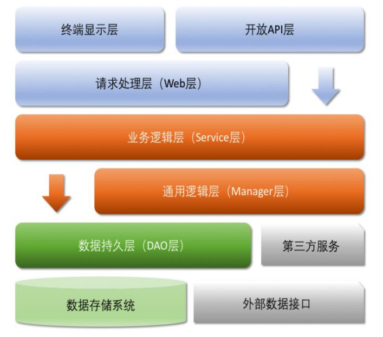

养成良好的编程习惯。
编程规约
命名风格
-
【强制】代码中的命名均不能以下划线或美元符号开始，也不能以下划线或美元符号结束。 反例：
_name / __name / $name / name_ / name$ / name__ -
【强制】所有编程相关的命名严禁使用拼音与英文混合的方式，更不允许直接使用中文的方式。 说明：正确的英文拼写和语法可以让阅读者易于理解，避免歧义。注意，纯拼音命名方式更要避免采用。
|
|
- 【强制】类名使用 UpperCamelCase（大驼峰式命名法） 风格。 但以下情形例外：DO / BO / DTO / VO / AO / PO / UID 等
|
|
- 【强制】方法名、参数名、成员变量、局部变量都统一使用 lowerCamelCase（小驼峰式命名法） 风格。
|
|
- 【强制】常量命名全部大写，单词间用下划线隔开，力求语义表达完整清楚，不要嫌名字长。
|
|
- 【强制】抽象类命名使用 Abstract 或 Base 开头；异常类命名使用 Exception 结尾；测试类 命名以它要测试的类的名称开始，以 Test 结尾。
- 【强制】类型与中括号紧挨相连来表示数组。
|
|
- 【强制】POJO 类中的任何布尔类型的变量，都不要加 is 前缀，否则部分框架解析会引起序列化错误。说明：在本文 MySQL 规约中的建表约定第一条，表达是与否的变量采用 is_xxx 的命名方式，所以，需要 在设置从 is_xxx 到 xxx 的映射关系。
|
|
- 【强制】包名统一使用小写，点分隔符之间有且仅有一个自然语义的英语单词。包名统一使用单数形式，但是类名如果有复数含义，类名可以使用复数形式。
|
|
- 【强制】避免在子父类的成员变量之间、或者不同代码块的局部变量之间采用完全相同的命名， 使可理解性降低。
|
|
-
【强制】杜绝完全不规范的缩写，避免望文不知义。 反例：AbstractClass“缩写”成 AbsClass；condition“缩写”成 condi；Function 缩写”成 Fu，此类随意缩写严重降低了代码的可阅读性。
-
【推荐】为了达到代码自解释的目标，任何自定义编程元素在命名时，使用尽量完整的单词组 合来表达。 正例：对某个对象引用的 volatile 字段进行原子更新的类名为
AtomicReferenceFieldUpdater。 反例：常见的方法内变量为 int a;的定义方式。 -
【推荐】在常量与变量的命名时，表示类型的名词放在词尾，以提升辨识度。
|
|
- 【推荐】如果模块、接口、类、方法使用了设计模式，在命名时需体现出具体模式。
|
|
- 【推荐】接口类中的方法和属性不要加任何修饰符号（public 也不要加），保持代码的简洁 性，并加上有效的 Javadoc 注释。尽量不要在接口里定义变量，如果一定要定义变量，确定 与接口方法相关，并且是整个应用的基础常量。
|
|
-
接口和实现类的命名有两套规则： 1）【强制】对于 Service 和 DAO 类，基于 SOA 的理念，暴露出来的服务一定是接口，内部的实现类用Impl 的后缀与接口区别。 正例：CacheServiceImpl 实现 CacheService 接口。
2）【推荐】如果是形容能力的接口名称，取对应的形容词为接口名（通常是–able 的形容词）。 正例：AbstractTranslator 实现 Translatable 接口。
-
【参考】枚举类名带上 Enum 后缀，枚举成员名称需要全大写，单词间用下划线隔开。 说明：枚举其实就是特殊的常量类，且构造方法被默认强制是私有。 正例：枚举名字为 ProcessStatusEnum 的成员名称：SUCCESS / UNKNOWN_REASON。
-
【参考】各层命名规约：
- Service/DAO 层方法命名规约 1） 获取单个对象的方法用 get 做前缀。 2） 获取多个对象的方法用 list 做前缀，复数结尾，如：listObjects。 3） 获取统计值的方法用 count 做前缀。 4） 插入的方法用 save/insert 做前缀。 5） 删除的方法用 remove/delete 做前缀。 6） 修改的方法用 update 做前缀。
- 领域模型命名规约 1） 数据对象：xxxDO，xxx 即为数据表名。 2） 数据传输对象：xxxDTO，xxx 为业务领域相关的名称。 3） 展示对象：xxxVO，xxx 一般为网页名称。 4） POJO 是 DO/DTO/BO/VO 的统称，禁止命名成 xxxPOJO。
常量定义
- 【强制】不允许任何魔法值（即未经预先定义的常量）直接出现在代码中。
|
|
- 【强制】在 long 或者 Long 赋值时，数值后使用大写字母 L，不能是小写字母 l，小写容易跟数字 1 混淆，造成误解。
|
|
-
【推荐】不要使用一个常量类维护所有常量，要按常量功能进行归类，分开维护。 说明：大而全的常量类，杂乱无章，使用查找功能才能定位到修改的常量，不利于理解，也不利于维护。 正例：缓存相关常量放在类 CacheConsts 下；系统配置相关常量放在类 SystemConfigConsts 下。
-
【推荐】常量的复用层次有五层：跨应用共享常量、应用内共享常量、子工程内共享常量、包内共享常量、类内共享常量。
- 跨应用共享常量：放置在二方库中，通常是 client.jar 中的 constant 目录下。
- 应用内共享常量：放置在一方库中，通常是子模块中的 constant 目录下。
反例：易懂常量也要统一定义成应用内共享常量，两个程序员在两个类中分别定义了表示“是”的常量：
类 A 中：
public static final String YES = "yes";类 B 中：public static final String YES = "y";A.YES.equals(B.YES)，预期是 true，但实际返回为 false，导致线上问题。 - 子工程内部共享常量：即在当前子工程的 constant 目录下。
- 包内共享常量：即在当前包下单独的 constant 目录下。
- 类内共享常量：直接在类内部 private static final 定义。
-
【推荐】如果变量值仅在一个固定范围内变化用 enum 类型来定义。 说明：如果存在名称之外的延伸属性应使用 enum 类型，下面正例中的数字就是延伸信息，表示一年中的第几个季节。
|
|
代码格式
-
【强制】如果是大括号内为空，则简洁地写成{}即可，大括号中间无需换行和空格；如果是非空代码块则： 左大括号前不换行。 左大括号后换行。 右大括号前换行。 右大括号后还有 else 等代码则不换行；表示终止的右大括号后必须换行。
-
【强制】左小括号和右边相邻字符之间不出现空格；右小括号和左边相邻字符之间也不出现空格；而左大括号前需要加空格。详见第 5 条下方正例提示。 反例：if (空格 a == b 空格)
-
【强制】if/for/while/switch/do 等保留字与括号之间都必须加空格。
-
【强制】任何二目、三目运算符的左右两边都需要加一个空格。 说明：包括赋值运算符=、逻辑运算符&&、加减乘除符号等。
-
【强制】采用 4 个空格缩进，禁止使用 Tab 字符。 说明：如果使用 Tab 缩进，必须设置 1 个 Tab 为 4 个空格。IDEA 设置 Tab 为 4 个空格时，请勿勾选 Use tab character；而在 Eclipse 中，必须勾选 insert spaces for tabs。 正例：（涉及上述中的 1-5 点）
|
|
- 【强制】注释的双斜线与注释内容之间有且仅有一个空格。 正例：
|
|
- 【强制】在进行类型强制转换时，右括号与强制转换值之间不需要任何空格隔开。 正例：
|
|
- 【强制】单行字符数限制不超过 120 个，超出需要换行，换行时遵循如下原则： 1）第二行相对第一行缩进 4 个空格，从第三行开始，不再继续缩进，参考示例。 2）运算符与下文一起换行。 3）方法调用的点符号与下文一起换行。 4）方法调用中的多个参数需要换行时，在逗号后进行。 5）在括号前不要换行，见反例。
|
|
-
【强制】方法参数在定义和传入时，多个参数逗号后面必须加空格。 正例：下例中实参的 args1，后边必须要有一个空格。
method(args1, args2, args3) -
【强制】IDE 的 text file encoding 设置为 UTF-8; IDE 中文件的换行符使用 Unix 格式，不要使用 Windows 格式。
-
【推荐】单个方法的总行数不超过 80 行。 说明：除注释之外的方法签名、左右大括号、方法内代码、空行、回车及任何不可见字符的总行数不超过80 行。
-
【推荐】没有必要增加若干空格来使变量的赋值等号与上一行对应位置的等号对齐。 正例：
|
|
说明：增加 sb 这个变量，如果需要对齐，则给 one、two、three 都要增加几个空格，在变量比较多的情况下，是非常累赘的事情。
- 【推荐】不同逻辑、不同语义、不同业务的代码之间插入一个空行分隔开来以提升可读性，没有必要插入多个空行进行隔开。
OOP规约
-
【强制】避免通过一个类的对象引用访问此类的静态变量或静态方法，无谓增加编译器解析成本，直接用类名来访问即可。
-
【强制】所有的覆写方法，必须加@Override 注解。 说明：getObject()与 get0bject()的问题。一个是字母的 O，一个是数字的 0，加@Override 可以准确判断是否覆盖成功。另外，如果在抽象类中对方法签名进行修改，其实现类会马上编译报错。
-
【强制】相同参数类型，相同业务含义，才可以使用 Java 的可变参数，避免使用 Object。 说明：可变参数必须放置在参数列表的最后。（建议开发者尽量不用可变参数编程） 正例：
public List<User> listUsers(String type, Long... ids) {...} -
【强制】外部正在调用或者二方库依赖的接口，不允许修改方法签名，避免对接口调用方产生 影响。接口过时必须加@Deprecated 注解，并清晰地说明采用的新接口或者新服务是什么。
-
【强制】不能使用过时的类或方法。 说明：java.net.URLDecoder 中的方法 decode(String encodeStr) 这个方法已经过时，应该使用双参数decode(String source, String encode)。接口提供方既然明确是过时接口，那么有义务同时提供新的接口；作为调用方来说，有义务去考证过时方法的新实现是什么。
-
【强制】Object 的 equals 方法容易抛空指针异常，应使用常量或确定有值的对象来调用 equals。
|
|
-
【强制】所有整型包装类对象之间值的比较，全部使用 equals 方法比较。 说明：对于 Integer var = ? 在-128 至 127 之间的赋值，Integer 对象是在 IntegerCache.cache 产生，会复用已有对象，这个区间内的 Integer 值可以直接使用 == 进行判断，但是这个区间之外的所有数据，都会在堆上产生，并不会复用已有对象，这是一个大坑，推荐使用 equals 方法进行判断。
-
【强制】任何货币金额，均以最小货币单位且整型类型来进行存储。
-
【强制】浮点数之间的等值判断，基本数据类型不能用 == 来比较，包装数据类型不能用 equals来判断。 说明：浮点数采用“尾数+阶码”的编码方式，类似于科学计数法的“有效数字+指数”的表示方式。二进制无法精确表示大部分的十进制小数，具体原理参考《码出高效》。
|
|
-
【强制】如上所示 BigDecimal 的等值比较应使用 compareTo()方法，而不是 equals()方法。 说明：equals()方法会比较值和精度（1.0 与 1.00 返回结果为 false），而 compareTo()则会忽略精度。
-
【强制】定义数据对象 DO 类时，属性类型要与数据库字段类型相匹配。 正例：数据库字段的 bigint 必须与类属性的 Long 类型相对应。 反例：某个案例的数据库表 id 字段定义类型 bigint unsigned，实际类对象属性为 Integer，随着 id越来越大，超过 Integer 的表示范围而溢出成为负数
-
【强制】禁止使用构造方法
BigDecimal(double)的方式把 double 值转化为 BigDecimal 对象。 说明：BigDecimal(double)存在精度损失风险，在精确计算或值比较的场景中可能会导致业务逻辑异常。
|
|
-
关于基本数据类型与包装数据类型的使用标准如下： 1）【强制】所有的 POJO 类属性必须使用包装数据类型。 2）【强制】RPC 方法的返回值和参数必须使用包装数据类型。 3）【推荐】所有的局部变量使用基本数据类型。 说明：POJO 类属性没有初值是提醒使用者在需要使用时，必须自己显式地进行赋值，任何 NPE 问题，或者入库检查，都由使用者来保证。 正例：数据库的查询结果可能是 null，因为自动拆箱，用基本数据类型接收有 NPE 风险。 反例：某业务的交易报表上显示成交总额涨跌情况，即正负 x%，x 为基本数据类型，调用的 RPC 服务，调用不成功时，返回的是默认值，页面显示为 0%，这是不合理的，应该显示成中划线-。所以包装数据类型的 null 值，能够表示额外的信息，如：远程调用失败，异常退出。
-
【强制】定义 DO/DTO/VO 等 POJO 类时，不要设定任何属性默认值。 反例：POJO 类的 createTime 默认值为 new Date()，但是这个属性在数据提取时并没有置入具体值，在更新其它字段时又附带更新了此字段，导致创建时间被修改成当前时间。
-
【强制】序列化类新增属性时，请不要修改 serialVersionUID 字段，避免反序列失败；如果完全不兼容升级，避免反序列化混乱，那么请修改 serialVersionUID 值。 说明：注意 serialVersionUID 不一致会抛出序列化运行时异常。
-
【强制】构造方法里面禁止加入任何业务逻辑，如果有初始化逻辑，请放在 init 方法中。
-
【强制】POJO 类必须写 toString 方法。使用 IDE 中的工具：source> generate toString时，如果继承了另一个 POJO 类，注意在前面加一下 super.toString。 说明：在方法执行抛出异常时，可以直接调用 POJO 的 toString()方法打印其属性值，便于排查问题。
-
【强制】禁止在 POJO 类中，同时存在对应属性 xxx 的 isXxx()和 getXxx()方法。 说明：框架在调用属性 xxx 的提取方法时，并不能确定哪个方法一定是被优先调用到的，神坑之一。
-
【推荐】使用索引访问用 String 的 split 方法得到的数组时，需做最后一个分隔符后有无内容的检查，否则会有抛 IndexOutOfBoundsException 的风险。
|
|
-
【推荐】当一个类有多个构造方法，或者多个同名方法，这些方法应该按顺序放置在一起，便于阅读，此条规则优先于下一条。
-
【推荐】 类内方法定义的顺序依次是：公有方法或保护方法 > 私有方法 > getter / setter方法。 说明：公有方法是类的调用者和维护者最关心的方法，首屏展示最好；保护方法虽然只是子类关心，也可能是“模板设计模式”下的核心方法；而私有方法外部一般不需要特别关心，是一个黑盒实现；因为承载的信息价值较低，所有 Service 和 DAO 的 getter/setter 方法放在类体最后。
-
【推荐】setter 方法中，参数名称与类成员变量名称一致，this.成员名 = 参数名。在getter/setter 方法中，不要增加业务逻辑，增加排查问题的难度。 反例：
|
|
- 【推荐】循环体内，字符串的连接方式，使用 StringBuilder 的 append 方法进行扩展。 说明：下例中，反编译出的字节码文件显示每次循环都会 new 出一个 StringBuilder 对象，然后进行 append操作，最后通过 toString 方法返回 String 对象，造成内存资源浪费。 反例：
|
|
- 【推荐】final 可以声明类、成员变量、方法、以及本地变量，下列情况使用 final 关键字： 1） 不允许被继承的类，如：String 类。 2） 不允许修改引用的域对象，如：POJO 类的域变量。 3） 不允许被覆写的方法，如：POJO 类的 setter 方法。 4） 不允许运行过程中重新赋值的局部变量。 5） 避免上下文重复使用一个变量，使用 final 关键字可以强制重新定义一个变量，方便更好地进行重构。
- 【推荐】慎用 Object 的 clone 方法来拷贝对象。 说明：对象 clone 方法默认是浅拷贝，若想实现深拷贝，需覆写 clone 方法实现域对象的深度遍历式拷贝。
- 【推荐】类成员与方法访问控制从严： 1） 如果不允许外部直接通过 new 来创建对象，那么构造方法必须是 private。 2） 工具类不允许有 public 或 default 构造方法。 3） 类非 static 成员变量并且与子类共享，必须是 protected。 4） 类非 static 成员变量并且仅在本类使用，必须是 private。 5） 类 static 成员变量如果仅在本类使用，必须是 private。 6） 若是 static 成员变量，考虑是否为 final。 7） 类成员方法只供类内部调用，必须是 private。 8） 类成员方法只对继承类公开，那么限制为 protected。 说明：任何类、方法、参数、变量，严控访问范围。过于宽泛的访问范围，不利于模块解耦。思考：如果是一个 private 的方法，想删除就删除，可是一个 public 的 service 成员方法或成员变量，删除一下，不得手心冒点汗吗？变量像自己的小孩，尽量在自己的视线内，变量作用域太大，无限制的到处跑，那么你会担心的。
日期时间
【强制】日期格式化时，传入 pattern 中表示年份统一使用小写的 y。
说明：日期格式化时，yyyy 表示当天所在的年，而大写的 YYYY 代表是 week in which year（JDK7 之后引入的概念），意思是当天所在的周属于的年份，一周从周日开始，周六结束，只要本周跨年，返回的 YYYY就是下一年。
正例：表示日期和时间的格式如下所示：
new SimpleDateFormat("yyyy-MM-dd HH:mm:ss")
反例：某程序员因使用 YYYY/MM/dd 进行日期格式化，2017/12/31 执行结果为 2018/12/31，造成线上故障。
【强制】在日期格式中分清楚大写的 M 和小写的 m，大写的 H 和小写的 h 分别指代的意义。
说明：日期格式中的这两对字母表意如下： 1） 表示月份是大写的 M； 2） 表示分钟则是小写的 m； 3） 24 小时制的是大写的 H； 4） 12 小时制的则是小写的 h。
【强制】获取当前毫秒数：System.currentTimeMillis(); 而不是 new Date().getTime()。
说明：如果想获取更加精确的纳秒级时间值，使用 System.nanoTime 的方式。在 JDK8 中，针对统计时间等场景，推荐使用 Instant 类。
【强制】不允许在程序任何地方中使用：1）java.sql.Date。 2）java.sql.Time。 3）java.sql.Timestamp。
说明：第 1 个不记录时间，getHours()抛出异常；第 2 个不记录日期，getYear()抛出异常；第 3 个在构造方法 super((time/1000)*1000)，在 Timestamp 属性 fastTime 和 nanos 分别存储秒和纳秒信息。 反例： java.util.Date.after(Date)进行时间比较时，当入参是 java.sql.Timestamp 时，会触发 JDK BUG(JDK9 已修复)，可能导致比较时的意外结果。
【强制】不要在程序中写死一年为 365 天
避免在公历闰年时出现日期转换错误或程序逻辑错误。
|
|
【推荐】避免公历闰年 2 月问题
闰年的 2 月份有 29 天，一年后的那一天不可能是 2 月 29日。
【推荐】使用枚举值来指代月份
如果使用数字，注意 Date，Calendar 等日期相关类的月份month 取值在 0-11 之间。 说明：参考 JDK 原生注释，Month value is 0-based. e.g., 0 for January. 正例： Calendar.JANUARY，Calendar.FEBRUARY，Calendar.MARCH 等来指代相应月份来进行传参或比较。
集合处理
-
【强制】关于 hashCode 和 equals 的处理，遵循如下规则： 1） 只要覆写 equals，就必须覆写 hashCode。 2） 因为 Set 存储的是不重复的对象，依据 hashCode 和 equals 进行判断，所以 Set 存储的对象必须覆写这两个方法。 3） 如果自定义对象作为 Map 的键，那么必须覆写 hashCode 和 equals。 说明：String 因为覆写了 hashCode 和 equals 方法，所以可以愉快地将 String 对象作为 key 来使用。
-
【强制】判断所有集合内部的元素是否为空，使用 isEmpty()方法，而不是 size()==0 的方式。 说明：在某些集合中，前者的时间复杂度为 O(1)，而且可读性更好。
|
|
- 【强制】在使用
java.util.stream.Collectors类的toMap()方法转为 Map 集合时，一定要使用含有参数类型为 BinaryOperator，参数名为 mergeFunction 的方法，否则当出现相同 key值时会抛出 IllegalStateException 异常。 说明：参数 mergeFunction 的作用是当出现 key 重复时，自定义对 value 的处理策略。
|
|
- 【强制】在使用 java.util.stream.Collectors 类的 toMap()方法转为 Map 集合时，一定要注意当 value 为 null 时会抛 NPE 异常。
|
|
-
【强制】ArrayList 的 subList 结果不可强转成 ArrayList，否则会抛出 ClassCastException 异常：java.util.RandomAccessSubList cannot be cast to java.util.ArrayList。 说明：subList()返回的是 ArrayList 的内部类 SubList，并不是 ArrayList 本身，而是 ArrayList 的一个视图，对于 SubList 的所有操作最终会反映到原列表上。
-
【强制】使用 Map 的方法 keySet()/values()/entrySet()返回集合对象时，不可以对其进行添加元素操作，否则会抛出 UnsupportedOperationException 异常。
-
【强制】Collections 类返回的对象，如：emptyList()/singletonList()等都是 immutable list，不可对其进行添加或者删除元素的操作。 反例：如果查询无结果，返回 Collections.emptyList()空集合对象，调用方一旦进行了添加元素的操作，就会触发 UnsupportedOperationException 异常。
-
【强制】在 subList 场景中，高度注意对父集合元素的增加或删除，均会导致子列表的遍历、增加、删除产生 ConcurrentModificationException 异常。
-
【强制】使用集合转数组的方法，必须使用集合的 toArray(T[] array)，传入的是类型完全一致、长度为 0 的空数组。 反例：直接使用 toArray 无参方法存在问题，此方法返回值只能是 Object[]类，若强转其它类型数组将出现ClassCastException 错误。
|
|
说明：使用 toArray 带参方法，数组空间大小的 length： 1） 等于 0，动态创建与 size 相同的数组，性能最好。 2） 大于 0 但小于 size，重新创建大小等于 size 的数组，增加 GC 负担。 3） 等于 size，在高并发情况下，数组创建完成之后，size 正在变大的情况下，负面影响与 2 相同。 4） 大于 size，空间浪费，且在 size 处插入 null 值，存在 NPE 隐患。
-
【强制】在使用 Collection 接口任何实现类的 addAll()方法时，都要对输入的集合参数进行 NPE 判断。 说明：在 ArrayList#addAll 方法的第一行代码即 Object[] a = c.toArray(); 其中 c 为输入集合参数，如果 为 null，则直接抛出异常。
-
【强制】使用工具类 Arrays.asList()把数组转换成集合时，不能使用其修改集合相关的方法，它的 add/remove/clear 方法会抛出 UnsupportedOperationException 异常。 说明：asList 的返回对象是一个 Arrays 内部类，并没有实现集合的修改方法。Arrays.asList 体现的是适配器模式，只是转换接口，后台的数据仍是数组。
|
|
-
【强制】泛型通配符
<? extends T>来接收返回的数据，此写法的泛型集合不能使用 add 方法，而<? super T>不能使用 get 方法，两者在接口调用赋值的场景中容易出错。 说明：扩展说一下 PECS(Producer Extends Consumer Super)原则：第一、频繁往外读取内容的，适合用<? extends T>。第二、经常往里插入的，适合用<? super T> -
【强制】在无泛型限制定义的集合赋值给泛型限制的集合时，在使用集合元素时，需要进行instanceof 判断，避免抛出 ClassCastException 异常。 说明：毕竟泛型是在 JDK5 后才出现，考虑到向前兼容，编译器是允许非泛型集合与泛型集合互相赋值。
|
|
- 【强制】不要在 foreach 循环里进行元素的 remove/add 操作。remove 元素请使用 Iterator方式，如果并发操作，需要对 Iterator 对象加锁。
|
|
- 【强制】在 JDK7 版本及以上，Comparator 实现类要满足如下三个条件，否则
Arrays.sort，Collections.sort会抛 IllegalArgumentException 异常。 说明：三个条件如下 1） x，y 的比较结果和 y，x 的比较结果相反。 2） x>y，y>z，则 x>z。 3） x=y，则 x，z 比较结果和 y，z 比较结果相同。 反例：下例中没有处理相等的情况，交换两个对象判断结果并不互反，不符合第一个条件，在实际使用中可能会出现异常。
|
|
- 【推荐】集合泛型定义时，在 JDK7 及以上，使用 diamond 语法或全省略。 说明：菱形泛型，即 diamond，直接使用<>来指代前边已经指定的类型。
|
|
-
【推荐】集合初始化时，指定集合初始值大小。 说明：HashMap 使用
HashMap(int initialCapacity)初始化，如果暂时无法确定集合大小，那么指定默认值（16）即可。 正例：initialCapacity = (需要存储的元素个数 / 负载因子) + 1。注意负载因子（即 loader factor）默认为 0.75，如果暂时无法确定初始值大小，请设置为 16（即默认值）。 反例： HashMap 需要放置 1024 个元素，由于没有设置容量初始大小，随着元素增加而被迫不断扩容，resize()方法总共会调用 8 次，反复重建哈希表和数据迁移。当放置的集合元素个数达千万级时会影响程序性能。 -
【推荐】使用 entrySet 遍历 Map 类集合 KV，而不是 keySet 方式进行遍历。 说明：keySet 其实是遍历了 2 次，一次是转为 Iterator 对象，另一次是从 hashMap 中取出 key 所对应的 value。而 entrySet 只是遍历了一次就把 key 和 value 都放到了 entry 中，效率更高。如果是 JDK8，使用 Map.forEach 方法。 正例：values()返回的是 V 值集合，是一个 list 集合对象；keySet()返回的是 K 值集合，是一个 Set 集合对 象；entrySet()返回的是 K-V 值组合集合。
-
【推荐】高度注意 Map 类集合 K/V 能不能存储 null 值的情况，如下表格：
key value Super 说明 HashTable 不允许null 不允许null Dictionary 线程安全 ConCurrentHashMap 不允许null 不允许null AbstractMap 锁分段技术（JDK8:CAS） TreeMap 不允许null 允许null AbstractMap 线程不安全 HashMap 允许null 允许null AbstractMap 线程不安全
由于 HashMap 的干扰，很多人认为 ConcurrentHashMap 是可以置入 null 值，而事实上，存储 null 值时会抛出 NPE 异常。
- 【参考】合理利用好集合的有序性（sort）和稳定性（order），避免集合的无序性（unsort）和不稳定性（unorder）带来的负面影响。 说明：有序性是指遍历的结果是按某种比较规则依次排列的。稳定性指集合每次遍历的元素次序是一定的。 如：ArrayList 是 order/unsort；HashMap 是 unorder/unsort；TreeSet 是 order/sort。
- 【参考】利用 Set 元素唯一的特性，可以快速对一个集合进行去重操作，避免使用 List 的 contains()进行遍历去重或者判断包含操作。
并发处理
-
【强制】获取单例对象需要保证线程安全，其中的方法也要保证线程安全。 说明：资源驱动类、工具类、单例工厂类都需要注意。
-
【强制】创建线程或线程池时请指定有意义的线程名称，方便出错时回溯。 正例：自定义线程工厂，并且根据外部特征进行分组，比如，来自同一机房的调用，把机房编号赋值给 whatFeatureOfGroup
|
|
-
【强制】线程资源必须通过线程池提供，不允许在应用中自行显式创建线程。 说明：线程池的好处是减少在创建和销毁线程上所消耗的时间以及系统资源的开销，解决资源不足的问题。如果不使用线程池，有可能造成系统创建大量同类线程而导致消耗完内存或者“过度切换”的问题。
-
【强制】线程池不允许使用 Executors 去创建，而是通过 ThreadPoolExecutor 的方式，这样的处理方式让写的同学更加明确线程池的运行规则，规避资源耗尽的风险。 说明：Executors 返回的线程池对象的弊端如下： 1）FixedThreadPool 和 SingleThreadPool： 允许的请求队列长度为 Integer.MAX_VALUE，可能会堆积大量的请求，从而导致 OOM。 2）CachedThreadPool： 允许的创建线程数量为 Integer.MAX_VALUE，可能会创建大量的线程，从而导致 OOM。
3）ScheduledThreadPool：
允许的请求队列长度为 Integer.MAX_VALUE，可能会堆积大量的请求，从而导致 OOM。
-
【强制】SimpleDateFormat 是线程不安全的类，一般不要定义为 static 变量，如果定义为 static，必须加锁，或者使用 DateUtils 工具类。
|
|
说明：如果是 JDK8 的应用，可以使用 Instant 代替 Date，LocalDateTime 代替 Calendar，DateTimeFormatter 代替 SimpleDateFormat，官方给出的解释：simple beautiful strong immutable thread-safe。
- 【强制】必须回收自定义的 ThreadLocal 变量，尤其在线程池场景下，线程经常会被复用，如果不清理自定义的 ThreadLocal 变量，可能会影响后续业务逻辑和造成内存泄露等问题。 尽量在代理中使用 try-finally 块进行回收。
|
|
-
【强制】高并发时，同步调用应该去考量锁的性能损耗。能用无锁数据结构，就不要用锁；能锁区块，就不要锁整个方法体；能用对象锁，就不要用类锁。 说明：尽可能使加锁的代码块工作量尽可能的小，避免在锁代码块中调用 RPC 方法。
-
【强制】对多个资源、数据库表、对象同时加锁时，需要保持一致的加锁顺序，否则可能会造成死锁。 说明：线程一需要对表 A、B、C 依次全部加锁后才可以进行更新操作，那么线程二的加锁顺序也必须是 A、B、C，否则可能出现死锁。
-
【强制】在使用阻塞等待获取锁的方式中，必须在 try 代码块之外，并且在加锁方法与 try 代码块之间没有任何可能抛出异常的方法调用，避免加锁成功后，在 finally 中无法解锁。 说明一：如果在 lock 方法与 try 代码块之间的方法调用抛出异常，那么无法解锁，造成其它线程无法成功获取锁。 说明二：如果 lock 方法在 try 代码块之内，可能由于其它方法抛出异常，导致在 finally 代码块中，unlock对未加锁的对象解锁，它会调用 AQS 的 tryRelease方法（取决于具体实现类），抛出IllegalMonitorStateException 异常。 说明三：在 Lock 对象的 lock 方法实现中可能抛出 unchecked 异常，产生的后果与说明二相同。
|
|
- 【强制】在使用尝试机制来获取锁的方式中，进入业务代码块之前，必须先判断当前线程是否持有锁。锁的释放规则与锁的阻塞等待方式相同。 说明：Lock 对象的 unlock 方法在执行时，它会调用 AQS 的 tryRelease 方法（取决于具体实现类），如果当前线程不持有锁，则抛出 IllegalMonitorStateException 异常。
|
|
-
【强制】并发修改同一记录时，避免更新丢失，需要加锁。要么在应用层加锁，要么在缓存加锁，要么在数据库层使用乐观锁，使用 version 作为更新依据。 说明：如果每次访问冲突概率小于 20%，推荐使用乐观锁，否则使用悲观锁。乐观锁的重试次数不得小于3 次。
-
【强制】多线程并行处理定时任务时，Timer 运行多个 TimeTask 时，只要其中之一没有捕获抛出的异常，其它任务便会自动终止运行，使用 ScheduledExecutorService 则没有这个问题。
-
【推荐】资金相关的金融敏感信息，使用悲观锁策略。 说明：乐观锁在获得锁的同时已经完成了更新操作，校验逻辑容易出现漏洞，另外，乐观锁对冲突的解决策略有较复杂的要求，处理不当容易造成系统压力或数据异常，所以资金相关的金融敏感信息不建议使用乐观锁更新。 正例：悲观锁遵循一锁、二判、三更新、四释放的原则。
-
【推荐】使用 CountDownLatch 进行异步转同步操作，每个线程退出前必须调用 countDown 方法，线程执行代码注意 catch 异常，确保 countDown 方法被执行到，避免主线程无法执行至await方法，直到超时才返回结果。 说明：注意，子线程抛出异常堆栈，不能在主线程 try-catch 到。
-
【推荐】避免 Random 实例被多线程使用，虽然共享该实例是线程安全的，但会因竞争同一 seed导致的性能下降。 说明：Random 实例包括 java.util.Random 的实例或者 Math.random()的方式。 正例：在 JDK7 之后，可以直接使用 API ThreadLocalRandom，而在 JDK7 之前，需要编码保证每个线程持有一个单独的 Random 实例。
-
【推荐】通过双重检查锁（double-checked locking），实现延迟初始化需要将目标属性声明为 volatile 型，（比如修改 helper 的属性声明为 private volatile Helper helper = null;）。
|
|
- 【参考】volatile 解决多线程内存不可见问题。对于一写多读，是可以解决变量同步问题，但是如果多写，同样无法解决线程安全问题。 说明：如果是 count++操作，使用如下类实现：
|
|
- 【参考】HashMap 在容量不够进行 resize 时由于高并发可能出现死链，导致 CPU 飙升，在开发过程中注意规避此风险。
- 【参考】ThreadLocal 对象使用 static 修饰，ThreadLocal 无法解决共享对象的更新问题。 说明：这个变量是针对一个线程内所有操作共享的，所以设置为静态变量，所有此类实例共享此静态变量，也就是说在类第一次被使用时装载，只分配一块存储空间，所有此类的对象（只要是这个线程内定义的）都可以操控这个变量。
控制语句
-
【强制】在一个 switch 块内，每个 case 要么通过 continue、break、return 等来终止，要么注释说明程序将继续执行到哪一个 case 为止；在一个 switch 块内，都必须包含一个 default语句并且放在最后，即使它什么代码也没有。 说明：注意 break 是退出 switch 语句块，而 return 是退出方法体。
-
【强制】当 switch 括号内的变量类型为 String 并且此变量为外部参数时，必须先进行 null判断。
|
|
- 【强制】在 if、else、for、while、do 语句中必须使用大括号。 说明：即使只有一行代码，也要采用大括号的编码方式。
|
|
- 【强制】三目运算符
condition? 表达式1 : 表达式2中，高度注意表达式 1 和 2 在类型对齐时，可能抛出因自动拆箱导致的 NPE 异常。 说明：以下两种场景会触发类型对齐的拆箱操作： 1） 表达式 1 或表达式 2 的值只要有一个是原始类型。 2） 表达式 1 或表达式 2 的值的类型不一致，会强制拆箱升级成表示范围更大的那个类型。
|
|
-
【强制】在高并发场景中，避免使用”等于”判断作为中断或退出的条件。 说明：如果并发控制没有处理好，容易产生等值判断被“击穿”的情况，使用大于或小于的区间判断条件来代替。 反例：判断剩余奖品数量等于 0 时，终止发放奖品，但因为并发处理错误导致奖品数量瞬间变成了负数，这样的话，活动无法终止。
-
【推荐】当某个方法的代码总行数超过 10 行时，return / throw 等中断逻辑的右大括号后均需要加一个空行。 说明：这样做逻辑清晰，有利于代码阅读时重点关注。
-
【推荐】表达异常的分支时，少用 if-else 方式，这种方式可以改写成：
|
|
说明：如果非使用 if()...else if()...else...方式表达逻辑，避免后续代码维护困难，请勿超过 3 层。
正例：超过 3 层的 if-else 的逻辑判断代码可以使用卫语句、策略模式、状态模式等来实现，其中卫语句示例如下：
|
|
- 【推荐】除常用方法（如 getXxx/isXxx）等外，不要在条件判断中执行其它复杂的语句，将复杂逻辑判断的结果赋值给一个有意义的布尔变量名，以提高可读性。 说明：很多 if 语句内的逻辑表达式相当复杂，与、或、取反混合运算，甚至各种方法纵深调用，理解成本非常高。如果赋值一个非常好理解的布尔变量名字，则是件令人爽心悦目的事情。
|
|
- 【推荐】不要在其它表达式（尤其是条件表达式）中，插入赋值语句。 说明：赋值点类似于人体的穴位，对于代码的理解至关重要，所以赋值语句需要清晰地单独成为一行。 反例：
|
|
-
【推荐】循环体中的语句要考量性能，以下操作尽量移至循环体外处理，如定义对象、变量、获取数据库连接，进行不必要的 try-catch 操作（这个 try-catch 是否可以移至循环体外）。
-
【推荐】避免采用取反逻辑运算符。 说明：取反逻辑不利于快速理解，并且取反逻辑写法一般都存在对应的正向逻辑写法。 正例：使用 if (x < 628) 来表达 x 小于 628。 反例：使用 if (!(x >= 628)) 来表达 x 小于 628。
-
【推荐】公开接口需要进行入参保护，尤其是批量操作的接口。 反例：某业务系统，提供一个用户批量查询的接口，API 文档上有说最多查多少个，但接口实现上没做任何保护，导致调用方传了一个 1000 的用户 id 数组过来后，查询信息后，内存爆了。
-
【参考】下列情形，需要进行参数校验： 1） 调用频次低的方法。 2） 执行时间开销很大的方法。此情形中，参数校验时间几乎可以忽略不计，但如果因为参数错误导致中间执行回退，或者错误，那得不偿失。 3） 需要极高稳定性和可用性的方法。 4） 对外提供的开放接口，不管是 RPC/API/HTTP 接口。 5） 敏感权限入口。
-
【参考】下列情形，不需要进行参数校验： 1） 极有可能被循环调用的方法。但在方法说明里必须注明外部参数检查。 2） 底层调用频度比较高的方法。毕竟是像纯净水过滤的最后一道，参数错误不太可能到底层才会暴露问题。一般 DAO 层与 Service 层都在同一个应用中，部署在同一台服务器中，所以 DAO 的参数校验，可以省略。 3） 被声明成 private 只会被自己代码所调用的方法，如果能够确定调用方法的代码传入参数已经做过检查或者肯定不会有问题，此时可以不校验参数。
注释规约
-
【强制】类、类属性、类方法的注释必须使用 Javadoc 规范，使用/*内容/格式，不得使用// xxx 方式。 说明：在 IDE 编辑窗口中，Javadoc 方式会提示相关注释，生成 Javadoc 可以正确输出相应注释；在 IDE中，工程调用方法时，不进入方法即可悬浮提示方法、参数、返回值的意义，提高阅读效率。
-
【强制】所有的抽象方法（包括接口中的方法）必须要用 Javadoc 注释、除了返回值、参数、异常说明外，还必须指出该方法做什么事情，实现什么功能。 说明：对子类的实现要求，或者调用注意事项，请一并说明。
-
【强制】所有的类都必须添加创建者和创建日期。 说明：在设置模板时，注意 IDEA 的@author 为
${USER}，而 eclipse 的@author 为${user}，大小写有区别，而日期的设置统一为 yyyy/MM/dd 的格式。 正例：
|
|
-
【强制】方法内部单行注释，在被注释语句上方另起一行，使用//注释。方法内部多行注释使用/* */注释，注意与代码对齐。
-
【强制】所有的枚举类型字段必须要有注释，说明每个数据项的用途。
-
【推荐】与其“半吊子”英文来注释，不如用中文注释把问题说清楚。专有名词与关键字保持英文原文即可。 反例：“TCP 连接超时”解释成“传输控制协议连接超时”，理解反而费脑筋。
-
【推荐】代码修改的同时，注释也要进行相应的修改，尤其是参数、返回值、异常、核心逻辑等的修改。 说明：代码与注释更新不同步，就像公路网与导航软件更新不同步一样，如果导航软件严重滞后，就失去了导航的意义。
-
【推荐】在类中删除未使用的任何字段、方法、内部类；在方法中删除未使用的任何参数声明与内部变量。
-
【参考】谨慎注释掉代码。在上方详细说明，而不是简单地注释掉。如果无用，则删除。 说明：代码被注释掉有两种可能性：1）后续会恢复此段代码逻辑。2）永久不用。前者如果没有备注信息，难以知晓注释动机。后者建议直接删掉即可，假如需要查阅历史代码，登录代码仓库即可。
-
【参考】对于注释的要求：第一、能够准确反映设计思想和代码逻辑；第二、能够描述业务含义，使别的程序员能够迅速了解到代码背后的信息。完全没有注释的大段代码对于阅读者形同天书，注释是给自己看的，即使隔很长时间，也能清晰理解当时的思路；注释也是给继任者看的，使其能够快速接替自己的工作。
-
【参考】好的命名、代码结构是自解释的，注释力求精简准确、表达到位。避免出现注释的一个极端：过多过滥的注释，代码的逻辑一旦修改，修改注释又是相当大的负担。
|
|
- 【参考】特殊注释标记，请注明标记人与标记时间。注意及时处理这些标记，通过标记扫描，经常清理此类标记。线上故障有时候就是来源于这些标记处的代码。 1） 待办事宜（TODO）:（标记人，标记时间，[预计处理时间]） 表示需要实现，但目前还未实现的功能。这实际上是一个 Javadoc 的标签，目前的 Javadoc 还没有实现，但已经被广泛使用。只能应用于类，接口和方法（因为它是一个 Javadoc 标签）。 2） 错误，不能工作（FIXME）:（标记人，标记时间，[预计处理时间]） 在注释中用 FIXME 标记某代码是错误的，而且不能工作，需要及时纠正的情况。
前后端规约
- 【强制】前后端交互的 API，需要明确协议、域名、路径、请求方法、请求内容、状态码、响应体。
|
|
-
【强制】前后端数据列表相关的接口返回，如果为空，则返回空数组
[]或空集合{}。 说明：此条约定有利于数据层面上的协作更加高效，减少前端很多琐碎的 null 判断。 -
【强制】服务端发生错误时，返回给前端的响应信息必须包含 HTTP 状态码，errorCode、errorMessage、用户提示信息四个部分。 说明：四个部分的涉众对象分别是浏览器、前端开发、错误排查人员、用户。其中输出给用户的提示信息要求：简短清晰、提示友好，引导用户进行下一步操作或解释错误原因，提示信息可以包括错误原因、上下文环境、推荐操作等。 errorCode：参考附表 3。errorMessage：简要描述后端出错原因，便于错误排查人员快速定位问题，注意不要包含敏感数据信息。 正例：常见的 HTTP 状态码如下 1） 200 OK: 表明该请求被成功地完成，所请求的资源发送到客户端。 2） 401 Unauthorized: 请求要求身份验证，常见对于需要登录而用户未登录的情况。 3） 403 Forbidden：服务器拒绝请求，常见于机密信息或复制其它登录用户链接访问服务器的情况。 4） 404 Not Found: 服务器无法取得所请求的网页，请求资源不存在。 5） 500 Internal Server Error: 服务器内部错误。
-
【强制】在前后端交互的 JSON 格式数据中，所有的 key 必须为小写字母开始的lowerCamelCase 风格，符合英文表达习惯，且表意完整。 正例：
errorCode / errorMessage / assetStatus / menuList / orderList / configFlag反例：ERRORCODE / ERROR_CODE / error_message / error-message / errormessage / ErrorMessage / msg -
【强制】errorMessage 是前后端错误追踪机制的体现，可以在前端输出到 type=“hidden"文字类控件中，或者用户端的日志中，帮助我们快速地定位出问题。
-
【强制】对于需要使用超大整数的场景，服务端一律使用 String 字符串类型返回，禁止使用Long 类型。 说明：Java 服务端如果直接返回 Long 整型数据给前端，JS 会自动转换为 Number 类型（注：此类型为双精度浮点数，表示原理与取值范围等同于 Java 中的 Double）。Long 类型能表示的最大值是 2 的 63 次方-1，在取值范围之内，超过 2 的 53 次方 (9007199254740992)的数值转化为 JS 的 Number 时，有些数值会有精度损失。
扩展说明：在 Long 取值范围内，任何 2 的指数次整数都是绝对不会存在精度损失的，所以说精度损失是一个概率问题。若浮点数尾数位与指数位空间不限，则可以精确表示任何整数，但很不幸，双精度浮点数的尾数位只有 52 位。 反例：通常在订单号或交易号大于等于 16 位，大概率会出现前后端单据不一致的情况，比如，“orderId”: 362909601374617692，前端拿到的值却是: 362909601374617660。
-
【强制】HTTP 请求通过 URL 传递参数时，不能超过 2048 字节。 说明：不同浏览器对于 URL 的最大长度限制略有不同，并且对超出最大长度的处理逻辑也有差异，2048字节是取所有浏览器的最小值。 反例：某业务将退货的商品 id 列表放在 URL 中作为参数传递，当一次退货商品数量过多时，URL 参数超长，传递到后端的参数被截断，导致部分商品未能正确退货。
-
【强制】HTTP 请求通过 body 传递内容时，必须控制长度，超出最大长度后，后端解析会出错。 说明：nginx 默认限制是 1MB，tomcat 默认限制为 2MB，当确实有业务需要传较大内容时，可以调大服务器端的限制。
-
【强制】在翻页场景中，用户输入参数的小于 1，则前端返回第一页参数给后端；后端发现用户输入的参数大于总页数，直接返回最后一页。
-
【强制】服务器内部重定向必须使用 forward；外部重定向地址必须使用 URL 统一代理模块生成，否则会因线上采用 HTTPS 协议而导致浏览器提示“不安全”，并且还会带来 URL 维护不一致的问题。
-
【推荐】服务器返回信息必须被标记是否可以缓存，如果缓存，客户端可能会重用之前的请求结果。 说明：缓存有利于减少交互次数，减少交互的平均延迟。 正例：http 1.1 中，s-maxage 告诉服务器进行缓存，时间单位为秒，用法如下：
response.setHeader("Cache-Control", "s-maxage=" + cacheSeconds); -
【推荐】服务端返回的数据，使用 JSON 格式而非 XML。 说明：尽管 HTTP 支持使用不同的输出格式，例如纯文本，JSON，CSV，XML，RSS 甚至 HTML。如果我们使用的面向用户的服务，应该选择 JSON 作为通信中使用的标准数据交换格式，包括请求和响应。此外，application/JSON 是一种通用的 MIME 类型，具有实用、精简、易读的特点。
-
【推荐】前后端的时间格式统一为
yyyy-MM-dd HH:mm:ss，统一为 GMT。 -
【参考】在接口路径中不要加入版本号，版本控制在 HTTP 头信息中体现，有利于向前兼容。 说明：当用户在低版本与高版本之间反复切换工作时，会导致迁移复杂度升高，存在数据错乱风险。
其他
-
【强制】在使用正则表达式时，利用好其预编译功能，可以有效加快正则匹配速度。 说明：不要在方法体内定义：
Pattern pattern = Pattern.compile(“规则”); -
【强制】避免用 Apache Beanutils 进行属性的 copy。 说明：
Apache BeanUtils性能较差，可以使用其他方案比如Spring BeanUtils, Cglib BeanCopier，注意均是浅拷贝。 -
【强制】velocity 调用 POJO 类的属性时，直接使用属性名取值即可，模板引擎会自动按规范调用 POJO 的 getXxx()，如果是 boolean 基本数据类型变量（boolean 命名不需要加 is 前缀），会自动调用 isXxx()方法。 说明：注意如果是 Boolean 包装类对象，优先调用 getXxx()的方法。
-
【强制】后台输送给页面的变量必须加
$!{var}，中间的感叹号。 说明：如果 var 等于 null 或者不存在，那么${var}会直接显示在页面上。 -
【强制】注意
Math.random()这个方法返回是 double 类型，注意取值的范围 0≤x<1（能够取到零值，注意除零异常），如果想获取整数类型的随机数，不要将 x 放大 10 的若干倍然后取整，直接使用 Random 对象的 nextInt 或者 nextLong 方法。 -
【推荐】不要在视图模板中加入任何复杂的逻辑。 说明：根据 MVC 理论，视图的职责是展示，不要抢模型和控制器的活。
-
【推荐】任何数据结构的构造或初始化，都应指定大小，避免数据结构无限增长吃光内存。
-
【推荐】及时清理不再使用的代码段或配置信息。 说明：对于垃圾代码或过时配置，坚决清理干净，避免程序过度臃肿，代码冗余。 正例：对于暂时被注释掉，后续可能恢复使用的代码片断，在注释代码上方，统一规定使用三个斜杠(///)来说明注释掉代码的理由。如：
|
|
异常日志
错误码
-
【强制】错误码的制定原则：快速溯源、沟通标准化。 说明： 错误码想得过于完美和复杂，就像康熙字典中的生僻字一样，用词似乎精准，但是字典不容易随身携带并且简单易懂。 正例：错误码回答的问题是谁的错？错在哪？ 1）错误码必须能够快速知晓错误来源，可快速判断是谁的问题。 2）错误码必须能够进行清晰地比对（代码中容易 equals）。 3）错误码有利于团队快速对错误原因达到一致认知。
-
【强制】错误码不体现版本号和错误等级信息。 说明：错误码以不断追加的方式进行兼容。错误等级由日志和错误码本身的释义来决定。
-
【强制】全部正常，但不得不填充错误码时返回五个零：00000。
-
【强制】错误码为字符串类型，共 5 位，分成两个部分：错误产生来源+四位数字编号。 说明：错误产生来源分为 A/B/C，A 表示错误来源于用户，比如参数错误，用户安装版本过低，用户支付超时等问题；B 表示错误来源于当前系统，往往是业务逻辑出错，或程序健壮性差等问题；C 表示错误来源于第三方服务，比如 CDN 服务出错，消息投递超时等问题；四位数字编号从 0001 到 9999，大类之间的步长间距预留 100，参考文末附表 3。
-
【强制】编号不与公司业务架构，更不与组织架构挂钩，以先到先得的原则在统一平台上进行，审批生效，编号即被永久固定。
-
【强制】错误码使用者避免随意定义新的错误码。 说明：尽可能在原有错误码附表中找到语义相同或者相近的错误码在代码中使用即可。
-
【强制】错误码不能直接输出给用户作为提示信息使用。 说明：堆栈（stack_trace）、错误信息(error_message)、错误码（error_code）、提示信息（user_tip）是一个有效关联并互相转义的和谐整体，但是请勿互相越俎代庖。
-
【推荐】错误码之外的业务独特信息由 error_message 来承载，而不是让错误码本身涵盖过多具体业务属性。
-
【推荐】在获取第三方服务错误码时，向上抛出允许本系统转义，由 C 转为 B，并且在错误信息上带上原有的第三方错误码。
-
【参考】错误码分为一级宏观错误码、二级宏观错误码、三级宏观错误码。 说明：在无法更加具体确定的错误场景中，可以直接使用一级宏观错误码，分别是：A0001（用户端错误）、B0001（系统执行出错）、C0001（调用第三方服务出错）。 正例：调用第三方服务出错是一级，中间件错误是二级，消息服务出错是三级。
-
【参考】错误码的后三位编号与 HTTP 状态码没有任何关系。
-
【参考】错误码有利于不同文化背景的开发者进行交流与代码协作。 说明：英文单词形式的错误码不利于非英语母语国家（如阿拉伯语、希伯来语、俄罗斯语等）之间的开发者互相协作。
-
【参考】错误码即人性，感性认知+口口相传，使用纯数字来进行错误码编排不利于感性记忆和分类。 说明：数字是一个整体，每位数字的地位和含义是相同的。 反例：一个五位数字 12345，第 1 位是错误等级，第 2 位是错误来源，345 是编号，人的大脑不会主动地拆开并分辨每位数字的不同含义。
异常处理
- 【强制】Java 类库中定义的可以通过预检查方式规避的 RuntimeException 异常，不应该通过catch 的方式来处理，比如：NullPointerException，IndexOutOfBoundsException 等等。 说明：无法通过预检查的异常除外，比如，在解析字符串形式的数字时，可能存在数字格式错误，不得不通过 catch NumberFormatException 来实现。
|
|
-
【强制】异常捕获后不要用来做流程控制，条件控制。 说明：异常设计的初衷是解决程序运行中的各种意外情况，且异常的处理效率比条件判断方式要低很多。
-
【强制】catch 时请分清稳定代码和非稳定代码，稳定代码指的是无论如何不会出错的代码。 对于非稳定代码的 catch 尽可能进行区分异常类型，再做对应的异常处理。 说明：对大段代码进行 try-catch，使程序无法根据不同的异常做出正确的应激反应，也不利于定位问题，这是一种不负责任的表现。 正例：用户注册的场景中，如果用户输入非法字符，或用户名称已存在，或用户输入密码过于简单，在程序上作出分门别类的判断，并提示给用户。
-
【强制】捕获异常是为了处理它，不要捕获了却什么都不处理而抛弃之，如果不想处理它，请将该异常抛给它的调用者。最外层的业务使用者，必须处理异常，将其转化为用户可以理解的内容。
-
【强制】事务场景中，抛出异常被 catch 后，如果需要回滚，一定要注意手动回滚事务。
-
【强制】finally 块必须对资源对象、流对象进行关闭，有异常也要做 try-catch。 说明：如果 JDK7 及以上，可以使用 try-with-resources 方式。
-
【强制】不要在 finally 块中使用 return。 说明：try 块中的 return 语句执行成功后，并不马上返回，而是继续执行 finally 块中的语句，如果此处存在 return 语句，则在此直接返回，无情丢弃掉 try 块中的返回点。
|
|
-
【强制】捕获异常与抛异常，必须是完全匹配，或者捕获异常是抛异常的父类。 说明：如果预期对方抛的是绣球，实际接到的是铅球，就会产生意外情况。
-
【强制】在调用 RPC、二方包、或动态生成类的相关方法时，捕捉异常必须使用 Throwable类来进行拦截。 说明：通过反射机制来调用方法，如果找不到方法，抛出 NoSuchMethodException。什么情况会抛出NoSuchMethodError 呢？二方包在类冲突时，仲裁机制可能导致引入非预期的版本使类的方法签名不匹配，或者在字节码修改框架（比如：ASM）动态创建或修改类时，修改了相应的方法签名。这些情况，即使代码编译期是正确的，但在代码运行期时，会抛出 NoSuchMethodError。 反例：足迹服务引入了高版本的 spring，导致运行到某段核心逻辑时，抛出 NoSuchMethodError 错误，catch 用的类却是 Exception，堆栈向上抛，影响到上层业务。这是一个非核心功能点影响到核心应用的典型反例。
-
【推荐】方法的返回值可以为 null，不强制返回空集合，或者空对象等，必须添加注释充分说明什么情况下会返回 null 值。 说明：本手册明确防止 NPE 是调用者的责任。即使被调用方法返回空集合或者空对象，对调用者来说，也并非高枕无忧，必须考虑到远程调用失败、序列化失败、运行时异常等场景返回 null 的情况。
-
【推荐】防止 NPE，是程序员的基本修养，注意 NPE 产生的场景：
- 返回类型为基本数据类型，return 包装数据类型的对象时，自动拆箱有可能产生 NPE。 反例：public int f() { return Integer 对象}， 如果为 null，自动拆箱抛 NPE。
- 数据库的查询结果可能为 null。
- 集合里的元素即使 isNotEmpty，取出的数据元素也可能为 null。
- 远程调用返回对象时，一律要求进行空指针判断，防止 NPE。
- 对于 Session 中获取的数据，建议进行 NPE 检查，避免空指针。
- 级联调用 obj.getA().getB().getC()；一连串调用，易产生 NPE。 正例：使用 JDK8 的 Optional 类来防止 NPE 问题。
-
【推荐】定义时区分 unchecked / checked 异常，避免直接抛出
new RuntimeException()，更不允许抛出 Exception 或者 Throwable，应使用有业务含义的自定义异常。推荐业界已定义过的自定义异常，如：DAOException / ServiceException等。 -
【参考】对于公司外的 http/api 开放接口必须使用 errorCode；而应用内部推荐异常抛出；跨应用间 RPC 调用优先考虑使用 Result 方式，封装 isSuccess()方法、errorCode、errorMessage；而应用内部直接抛出异常即可。 说明：关于 RPC 方法返回方式使用 Result 方式的理由： 1）使用抛异常返回方式，调用方如果没有捕获到就会产生运行时错误。 2）如果不加栈信息，只是 new 自定义异常，加入自己的理解的 error message，对于调用端解决问题的帮助不会太多。如果加了栈信息，在频繁调用出错的情况下，数据序列化和传输的性能损耗也是问题。
日志规约
- 【强制】应用中不可直接使用日志系统（Log4j、Logback）中的 API，而应依赖使用日志框架
（SLF4J、JCL--Jakarta Commons Logging）中的 API，使用门面模式的日志框架，有利于维护和各个类的日志处理方式统一。 说明：日志框架（SLF4J、JCL–Jakarta Commons Logging）的使用方式（推荐使用 SLF4J）
|
|
-
【强制】所有日志文件至少保存 15 天，因为有些异常具备以“周”为频次发生的特点。 对于当天日志，以
“应用名.log”来保存，保存在/{统一目录}/{应用名}/logs/目录下，过往日志格式为{logname}.log.{保存日期}，日期格式：yyyy-MM-dd正例：以 app 应用为例，日志保存在/home/admin/appserver/logs/app.log，历史日志名称为mppserver.log.2021-11-28 -
【强制】根据国家法律，网络运行状态、网络安全事件、个人敏感信息操作等相关记录，留存的日志不少于六个月，并且进行网络多机备份。
-
【强制】应用中的扩展日志（如打点、临时监控、访问日志等）命名方式：
appName_logType_logName.loglogType：日志类型，如stats/monitor/access等； logName：日志描述。 这种命名的好处：通过文件名就可知道日志文件属于什么应用，什么类型，什么目的，也有利于归类查找。 说明：推荐对日志进行分类，如将错误日志和业务日志分开存放，便于开发人员查看，也便于通过日志对系统进行及时监控。 正例：mppserver 应用中单独监控时区转换异常，如：mppserver_monitor_timeZoneConvert.log -
【强制】对于
trace/debug/info级别的日志输出，必须进行日志级别的开关判断。 说明：虽然在 debug(参数)的方法体内第一行代码isDisabled(Level.DEBUG_INT)为真时（Slf4j 的常见实现Log4j 和 Logback），就直接 return，但是参数可能会进行字符串拼接运算。此外，如果debug(getName())这种参数内有 getName()方法调用，无谓浪费方法调用的开销。
|
|
-
【强制】避免重复打印日志，浪费磁盘空间，务必在日志配置文件中设置 additivity=false。 正例：
<logger name="com.taobao.dubbo.config" additivity="false"> -
【强制】生产环境禁止使用
System.out或System.err输出日志，禁止使用e.printStackTrace()打印异常堆栈。 说明：标准日志输出与标准错误输出文件每次 Jboss 重启时才滚动，如果大量输出送往这两个文件，容易造成文件大小超过操作系统大小限制。 -
【强制】异常信息应该包括两类信息：案发现场信息和异常堆栈信息。如果不处理，那么通过关键字 throws 往上抛出。 正例：
logger.error("inputParams:{} and errorMessage:{}", 各类参数或者对象 toString(), e.getMessage(), e); -
【强制】日志打印时禁止直接用 JSON 工具将对象转换成 String。 说明：如果对象里某些 get 方法被覆写，存在抛出异常的情况，则可能会因为打印日志而影响正常业务流程的执行。 正例：打印日志时仅打印出业务相关属性值或者调用其对象的 toString()方法。
-
【推荐】谨慎地记录日志。生产环境禁止输出 debug 日志；有选择地输出 info 日志；如果使用 warn 来记录刚上线时的业务行为信息，一定要注意日志输出量的问题，避免把服务器磁盘撑 爆，并记得及时删除这些观察日志。 说明：大量地输出无效日志，不利于系统性能提升，也不利于快速定位错误点。记录日志时请思考：这些日志真的有人看吗？看到这条日志你能做什么？能不能给问题排查带来好处？
-
【推荐】可以使用 warn 日志级别来记录用户输入参数错误的情况，避免用户投诉时，无所适 从。如非必要，请不要在此场景打出 error 级别，避免频繁报警。 说明：注意日志输出的级别，error 级别只记录系统逻辑出错、异常或者重要的错误信息。
-
【推荐】尽量用英文来描述日志错误信息，如果日志中的错误信息用英文描述不清楚的话使用 中文描述即可，否则容易产生歧义。 说明：国际化团队或海外部署的服务器由于字符集问题，使用全英文来注释和描述日志错误信息。
单元测试
-
【强制】好的单元测试必须遵守 AIR 原则。 说明：单元测试在线上运行时，感觉像空气（AIR）一样感觉不到，但在测试质量的保障上，却是非常关键的。好的单元测试宏观上来说，具有自动化、独立性、可重复执行的特点。 A：Automatic（自动化） I：Independent（独立性） R：Repeatable（可重复）
-
【强制】单元测试应该是全自动执行的，并且非交互式的。测试用例通常是被定期执行的，执行过程必须完全自动化才有意义。输出结果需要人工检查的测试不是一个好的单元测试。单元测试中不准使用 System.out 来进行人肉验证，必须使用 assert 来验证。
-
【强制】保持单元测试的独立性。为了保证单元测试稳定可靠且便于维护，单元测试用例之间决不能互相调用，也不能依赖执行的先后次序。 反例：method2 需要依赖 method1 的执行，将执行结果作为 method2 的输入。
-
【强制】单元测试是可以重复执行的，不能受到外界环境的影响。 说明：单元测试通常会被放到持续集成中，每次有代码 check in 时单元测试都会被执行。如果单测对外部环境（网络、服务、中间件等）有依赖，容易导致持续集成机制的不可用。 正例：为了不受外界环境影响，要求设计代码时就把 SUT 的依赖改成注入，在测试时用 spring 这样的 DI框架注入一个本地（内存）实现或者 Mock 实现。
-
【强制】对于单元测试，要保证测试粒度足够小，有助于精确定位问题。单测粒度至多是类级别，一般是方法级别。 说明：只有测试粒度小才能在出错时尽快定位到出错位置。单测不负责检查跨类或者跨系统的交互逻辑，那是集成测试的领域。
-
【强制】核心业务、核心应用、核心模块的增量代码确保单元测试通过。 说明：新增代码及时补充单元测试，如果新增代码影响了原有单元测试，请及时修正。
-
【强制】单元测试代码必须写在如下工程目录：
src/test/java，不允许写在业务代码目录下。 说明：源码编译时会跳过此目录，而单元测试框架默认是扫描此目录。 -
【推荐】单元测试的基本目标：语句覆盖率达到 70%；核心模块的语句覆盖率和分支覆盖率都要达到 100% 说明：在工程规约的应用分层中提到的 DAO 层，Manager 层，可重用度高的 Service，都应该进行单元测试。
-
【推荐】编写单元测试代码遵守 BCDE 原则，以保证被测试模块的交付质量。 B：Border，边界值测试，包括循环边界、特殊取值、特殊时间点、数据顺序等。 C：Correct，正确的输入，并得到预期的结果。 D：Design，与设计文档相结合，来编写单元测试。 E：Error，强制错误信息输入（如：非法数据、异常流程、业务允许外等），并得到预期的结果。
-
【推荐】对于数据库相关的查询，更新，删除等操作，不能假设数据库里的数据是存在的，或者直接操作数据库把数据插入进去，请使用程序插入或者导入数据的方式来准备数据。 反例：删除某一行数据的单元测试，在数据库中，先直接手动增加一行作为删除目标，但是这一行新增数据并不符合业务插入规则，导致测试结果异常。
-
【推荐】和数据库相关的单元测试，可以设定自动回滚机制，不给数据库造成脏数据。或者对单元测试产生的数据有明确的前后缀标识。 正例：在阿里巴巴企业智能事业部的内部单元测试中，使用 ENTERPRISE_INTELLIGENCE _UNIT_TEST_的前缀来标识单元测试相关代码。
-
【推荐】对于不可测的代码在适当的时机做必要的重构，使代码变得可测，避免为了达到测试要求而书写不规范测试代码。
-
【推荐】在设计评审阶段，开发人员需要和测试人员一起确定单元测试范围，单元测试最好覆盖所有测试用例（UC）。
-
【推荐】单元测试作为一种质量保障手段，在项目提测前完成单元测试，不建议项目发布后补充单元测试用例。
-
【参考】为了更方便地进行单元测试，业务代码应避免以下情况：
- 构造方法中做的事情过多。
- 存在过多的全局变量和静态方法。
- 存在过多的外部依赖。
- 存在过多的条件语句。 说明：多层条件语句建议使用卫语句、策略模式、状态模式等方式重构。
-
【参考】不要对单元测试存在如下误解：
- 那是测试同学干的事情。本文是开发手册，凡是本文内容都是与开发同学强相关的。
- 单元测试代码是多余的。系统的整体功能与各单元部件的测试正常与否是强相关的。
- 单元测试代码不需要维护。一年半载后，那么单元测试几乎处于废弃状态。
- 单元测试与线上故障没有辩证关系。好的单元测试能够最大限度地规避线上故障。
安全规约
-
【强制】隶属于用户个人的页面或者功能必须进行权限控制校验。 说明：防止没有做水平权限校验就可随意访问、修改、删除别人的数据，比如查看他人的私信内容。
-
【强制】用户敏感数据禁止直接展示，必须对展示数据进行脱敏。 说明：中国大陆个人手机号码显示：139****1219，隐藏中间 4 位，防止隐私泄露。
-
【强制】用户输入的 SQL 参数严格使用参数绑定或者 METADATA 字段值限定，防止 SQL 注入，禁止字符串拼接 SQL 访问数据库。 反例：某系统签名大量被恶意修改，即是因为对于危险字符
#和--（这两个都是sql中的注释）没有进行转义，导致数据库更新时，where后边的信息被注释掉，对全库进行更新。 -
【强制】用户请求传入的任何参数必须做有效性验证。 说明：忽略参数校验可能导致：
- page size 过大导致内存溢出
- 恶意 order by 导致数据库慢查询
- 缓存击穿
- SSRF
- 任意重定向
- SQL 注入，Shell 注入，反序列化注入
- 正则输入源串拒绝服务 ReDoS Java 代码用正则来验证客户端的输入，有些正则写法验证普通用户输入没有问题，但是如果攻击人员使用的是特殊构造的字符串来验证，有可能导致死循环的结果。
-
【强制】禁止向 HTML 页面输出未经安全过滤或未正确转义的用户数据。
-
【强制】表单、AJAX 提交必须执行 CSRF 安全验证。 说明：CSRF（Cross-site request forgery）跨站请求伪造是一类常见编程漏洞。对于存在 CSRF 漏洞的应用/网站，攻击者可以事先构造好 URL，只要受害者用户一访问，后台便在用户不知情的情况下对数据库中用户参数进行相应修改。
-
【强制】URL 外部重定向传入的目标地址必须执行白名单过滤。 说明：攻击者通过恶意构造跳转的链接，可以向受害者发起钓鱼攻击。
-
【强制】在使用平台资源，譬如短信、邮件、电话、下单、支付，必须实现正确的防重放的机制，如数量限制、疲劳度控制、验证码校验，避免被滥刷而导致资损。 说明：如注册时发送验证码到手机，如果没有限制次数和频率，那么可以利用此功能骚扰到其它用户，并造成短信平台资源浪费。
-
【强制】对于文件上传功能，需要对于文件大小、类型进行严格检查和控制。
说明：攻击者可以利用上传漏洞，上传恶意文件到服务器，并且远程执行，达到控制网站服务器的目的。
-
【强制】配置文件中的密码需要加密。
-
【推荐】发贴、评论、发送即时消息等用户生成内容的场景必须实现防刷、文本内容违禁词过滤等风控策略。
MySQL
建表规约
-
【强制】表达是与否概念的字段，必须使用 is_xxx 的方式命名，数据类型是
unsigned tinyint（1 表示是，0 表示否）。 注意：POJO 类中的任何布尔类型的变量，都不要加 is 前缀，所以，需要在<resultMap>设置从 is_xxx 到Xxx 的映射关系。数据库表示是与否的值，使用 tinyint 类型，坚持 is_xxx 的命名方式是为了明确其取值含义与取值范围。 说明：任何字段如果为非负数，必须是 unsigned。 正例：表达逻辑删除的字段名 is_deleted，1 表示删除，0 表示未删除。 -
【强制】表名、字段名必须使用小写字母或数字，禁止出现数字开头，禁止两个下划线中间只出现数字。数据库字段名的修改代价很大，因为无法进行预发布，所以字段名称需要慎重考虑。 说明：MySQL 在 Windows 下不区分大小写，但在 Linux 下默认是区分大小写。因此，数据库名、表名、字段名，都不允许出现任何大写字母，避免节外生枝。 正例：
aliyun_admin，rdc_config，level3_name反例：AliyunAdmin，rdcConfig，level_3_name -
【强制】表名不使用复数名词。 说明：表名应该仅仅表示表里面的实体内容，不应该表示实体数量，对应于 DO 类名也是单数形式，符合表达习惯。
-
【强制】禁用保留字，如
desc、range、match、delayed等，请参考 MySQL 官方保留字。 -
【强制】主键索引名为 pk_字段名；唯一索引名为 uk_字段名；普通索引名则为 idx_字段名。 说明：pk_ 即 primary key；uk_ 即 unique key；idx_ 即 index 的简称。
-
【强制】小数类型为 decimal，禁止使用 float 和 double。 说明：在存储的时候，float 和 double 都存在精度损失的问题，很可能在比较值的时候，得到不正确的结果。如果存储的数据范围超过 decimal 的范围，建议将数据拆成整数和小数并分开存储。
-
【强制】如果存储的字符串长度几乎相等，使用 char 定长字符串类型。
-
【强制】varchar 是可变长字符串，不预先分配存储空间，长度不要超过 5000，如果存储长度大于此值，定义字段类型为 text，独立出来一张表，用主键来对应，避免影响其它字段索引效率。
-
【强制】表必备三字段：
id、create_time、update_time。 说明：其中 id 必为主键，类型为bigint unsigned、单表时自增、步长为 1。create_time、update_time的类型均为 datetime 类型，前者现在时表示主动式创建，后者过去分词表示被动式更新。 -
【强制】在数据库中不能使用物理删除操作，要使用逻辑删除。 说明：逻辑删除在数据删除后可以追溯到行为操作。不过会使得一些情况下的唯一主键变得不唯一，需要根据情况来酌情解决。
-
【推荐】表的命名最好是遵循
业务名称_表的作用。 正例：alipay_task / force_project / trade_config -
【推荐】库名与应用名称尽量一致。
-
建议将大字段，访问频度低的字段拆分到单独的表中存储，分离冷热数据。
-
【推荐】如果修改字段含义或对字段表示的状态追加时，需要及时更新字段注释。
-
【推荐】字段允许适当冗余，以提高查询性能，但必须考虑数据一致。冗余字段应遵循： 1） 不是频繁修改的字段。 2） 不是唯一索引的字段。 3） 不是 varchar 超长字段，更不能是 text 字段。 正例：各业务线经常冗余存储商品名称，避免查询时需要调用 IC 服务获取。
-
【推荐】单表行数超过 500 万行或者单表容量超过 2GB，才推荐进行分库分表。 说明：如果预计三年后的数据量根本达不到这个级别，请不要在创建表时就分库分表。
-
【参考】合适的字符存储长度，不但节约数据库表空间、节约索引存储，更重要的是提升检索速度。 正例：无符号值可以避免误存负数，且扩大了表示范围。
| 对象 | 年龄区间 | 类型 | 字节 | 表示范围 |
|---|---|---|---|---|
| 人 | 150 岁之内 | tinyint unsigned | 1 | 无符号值：0 到 255 |
| 龟 | 数百岁 | smallint unsigned | 2 | 无符号值：0 到 65535 |
| 恐龙化石 | 数千万年 | int unsigned | 4 | 无符号值：0 到约 43 亿 |
| 太阳 | 约 50 亿年 | bigint unsigned | 8 | 无符号值：0 到约 10 的 19 次方 |
索引规约
-
【强制】业务上具有唯一特性的字段，即使是组合字段，也必须建成唯一索引。 说明：不要以为唯一索引影响了 insert 速度，这个速度损耗可以忽略，但提高查找速度是明显的；另外，即使在应用层做了非常完善的校验控制，只要没有唯一索引，根据墨菲定律，必然有脏数据产生。
-
【强制】超过三个表禁止 join。需要 join 的字段，数据类型保持绝对一致；多表关联查询时，保证被关联的字段需要有索引。 说明：即使双表 join 也要注意表索引、SQL 性能。
-
【强制】在 varchar 字段上建立索引时，必须指定索引长度，没必要对全字段建立索引，根据实际文本区分度决定索引长度。 说明：索引的长度与区分度是一对矛盾体，一般对字符串类型数据，长度为 20 的索引，区分度会高达 90%以上，可以使用
count(distinct left(列名, 索引长度))/count(*)的区分度来确定。 -
【强制】页面搜索严禁左模糊或者全模糊，如果需要请走搜索引擎来解决。 说明：索引文件具有 B-Tree 的最左前缀匹配特性，如果左边的值未确定，那么无法使用此索引。
-
【推荐】如果有 order by 的场景，请注意利用索引的有序性。order by 最后的字段是组合索引的一部分，并且放在索引组合顺序的最后，避免出现 filesort 的情况，影响查询性能。 正例：
where a=? and b=? order by c; 索引：a_b_c反例：索引如果存在范围查询，那么索引有序性无法利用，如：WHERE a>10 ORDER BY b; 索引 a_b 无法排序。 -
【推荐】利用覆盖索引来进行查询操作，避免回表。 说明：如果一本书需要知道第 11 章是什么标题，会翻开第 11 章对应的那一页吗？目录浏览一下就好，这个目录就是起到覆盖索引的作用。 正例：能够建立索引的种类分为主键索引、唯一索引、普通索引三种，而覆盖索引只是一种查询的一种效果，用 explain 的结果，extra 列会出现：using index。
-
【推荐】利用延迟关联或者子查询优化超多分页场景。 说明：MySQL 并不是跳过 offset 行，而是取 offset+N 行，然后返回放弃前 offset 行，返回 N 行，那当offset 特别大的时候，效率就非常的低下，要么控制返回的总页数，要么对超过特定阈值的页数进行 SQL改写。 正例：先快速定位需要获取的 id 段，然后再关联：
|
|
-
【推荐】SQL 性能优化的目标：至少要达到 range 级别，要求是 ref 级别，如果可以是 consts最好。 说明： 1） consts 单表中最多只有一个匹配行（主键或者唯一索引），在优化阶段即可读取到数据。 2） ref 指的是使用普通的索引（normal index）。 3） range 对索引进行范围检索。 反例：explain 表的结果，type=index，索引物理文件全扫描，速度非常慢，这个 index 级别比较 range还低，与全表扫描是小巫见大巫。
-
【推荐】建组合索引的时候，区分度最高的在最左边。 正例：如果
where a=? and b=?，a 列的几乎接近于唯一值，那么只需要单建 idx_a 索引即可。 说明：存在非等号（>和<）和等号混合判断（>=和<=）条件时，在建索引时，请把等号条件的列前置。如：where c>? and d=?那么即使 c 的区分度更高，也必须把 d 放在索引的最前列，即建立组合索引 idx_d_c。 -
【推荐】防止因字段类型不同造成的隐式转换，导致索引失效。
-
【参考】创建索引时避免有如下极端误解： 1） 索引宁滥勿缺。认为一个查询就需要建一个索引。 2） 吝啬索引的创建。认为索引会消耗空间、严重拖慢记录的更新以及行的新增速度。 3） 抵制惟一索引。认为惟一索引一律需要在应用层通过“先查后插”方式解决。
SQL 语句
-
【强制】不要使用
count(列名)或 count(常量)来替代count(*)count(*)是 SQL92 定义的标准统计行数的语法，跟数据库无关，跟 NULL 和非 NULL 无关。 说明：count(*)会统计值为 NULL 的行，而count(列名)不会统计值为 NULL 的行。 -
【强制】
count(distinct col)计算该列除 NULL 之外的不重复行数，注意count(distinct col1, col2)如果其中一列全为 NULL，那么即使另一列有不同的值，也返回为 0。 -
【强制】当某一列的值全是 NULL 时，
count(col)的返回结果为 0，但sum(col)的返回结果为NULL，因此使用sum()时需注意 NPE 问题。 正例：可以使用如下方式来避免 sum 的 NPE 问题：SELECT IFNULL(SUM(column), 0) FROM table; -
【强制】使用
ISNULL()来判断是否为 NULL 值。 说明：NULL 与任何值的直接比较都为 NULL。 1）NULL<>NULL的返回结果是 NULL，而不是 false。 2）NULL=NULL的返回结果是 NULL，而不是 true。 3）NULL<>1的返回结果是 NULL，而不是 true。 反例：在 SQL 语句中，如果在 null 前换行，影响可读性。select * from table where column1 is null and column3 is not null;而ISNULL(column)是一个整体，简洁易懂。从性能数据上分析，ISNULL(column)执行效率更快一些。 -
【强制】代码中写分页查询逻辑时，若 count 为 0 应直接返回，避免执行后面的分页语句。
-
【强制】不得使用外键与级联，一切外键概念必须在应用层解决。 说明：（概念解释）学生表中的 student_id 是主键，那么成绩表中的 student_id 则为外键。如果更新学生表中的 student_id，同时触发成绩表中的 student_id 更新，即为级联更新。外键与级联更新适用于单机低并发，不适合分布式、高并发集群；级联更新是强阻塞，存在数据库更新风暴的风险；外键影响数据库的插入速度。
-
【强制】禁止使用存储过程，存储过程难以调试和扩展，更没有移植性。
-
【强制】数据订正（特别是删除或修改记录操作）时，要先 select，避免出现误删除，确认无误才能执行更新语句。
-
【强制】对于数据库中表记录的查询和变更，只要涉及多个表，都需要在列名前加表的别名（或表名）进行限定。 说明：对多表进行查询记录、更新记录、删除记录时，如果对操作列没有限定表的别名（或表名），并且操作列在多个表中存在时，就会抛异常。
|
|
反例：在某业务中，由于多表关联查询语句没有加表的别名（或表名）的限制，正常运行两年后，最近在某个表中增加一个同名字段，在预发布环境做数据库变更后，线上查询语句出现出 1052 异常：Column 'name' in field list is ambiguous。
- 【推荐】SQL 语句中表的别名前加 as，并且以
t1、t2、t3、...的顺序依次命名。 说明： 1）别名可以是表的简称，或者是依照表在 SQL 语句中出现的顺序，以 t1、t2、t3 的方式命名。 2）别名前加 as 使别名更容易识别。
|
|
-
【推荐】in 操作能避免则避免，若实在避免不了，需要仔细评估 in 后边的集合元素数量，控制在 1000 个之内。
-
【参考】因国际化需要，所有的字符存储与表示，均采用 utf8 字符集，那么字符计数方法需要注意。 说明：
SELECT LENGTH("轻松工作");返回为 12SELECT CHARACTER_LENGTH("轻松工作");返回为 4 如果需要存储表情，那么选择 utf8mb4 来进行存储，注意它与 utf8 编码的区别。 -
【参考】TRUNCATE TABLE 比 DELETE 速度快，且使用的系统和事务日志资源少，但 TRUNCATE无事务且不触发 trigger，有可能造成事故，故不建议在开发代码中使用此语句。 说明：TRUNCATE TABLE 在功能上与不带 WHERE 子句的 DELETE 语句相同。
ORM 映射
-
【强制】在表查询中，一律不要使用 * 作为查询的字段列表，需要哪些字段必须明确写明。 说明： 1）增加查询分析器解析成本。 2）增减字段容易与 resultMap 配置不一致。 3）无用字段增加网络消耗，尤其是 text 类型的字段。
-
【强制】POJO 类的布尔属性不能加 is，而数据库字段必须加 is_，要求在 resultMap 中进行字段与属性之间的映射。 说明：参见定义 POJO 类以及数据库字段定义规定，在 sql.xml 增加映射，是必须的。
-
【强制】不要用 resultClass 当返回参数，即使所有类属性名与数据库字段一一对应，也需要定义
<resultMap>；反过来，每一个表也必然有一个<resultMap>与之对应。 说明：配置映射关系，使字段与 DO 类解耦，方便维护。 -
【强制】sql.xml 配置参数使用：
#{}，#param# 不要使用${}此种方式容易出现 SQL 注入。 -
【强制】iBATIS 自带的
queryForList(String statementName,int start,int size)不推荐使用。 说明：其实现方式是在数据库取到 statementName 对应的 SQL 语句的所有记录，再通过 subList 取start，size 的子集合。 正例：
|
|
-
【强制】不允许直接拿 HashMap 与 Hashtable 作为查询结果集的输出。 反例：某同学为避免写一个
<resultMap>xxx</resultMap>，直接使用 HashTable 来接收数据库返回结果，结果出现日常是把 bigint 转成 Long 值，而线上由于数据库版本不一样，解析成 BigInteger，导致线上问题。 -
【强制】更新数据表记录时，必须同时更新记录对应的 update_time 字段值为当前时间。
-
【推荐】不要写一个大而全的数据更新接口。传入为 POJO 类，不管是不是自己的目标更新字段，都进行 update table set c1=value1,c2=value2,c3=value3; 这是不对的。执行 SQL 时，不要更新无改动的字段，一是易出错；二是效率低；三是增加 binlog 存储。
-
【参考】@Transactional 事务不要滥用。事务会影响数据库的 QPS，另外使用事务的地方需要考虑各方面的回滚方案，包括缓存回滚、搜索引擎回滚、消息补偿、统计修正等。
-
【参考】
<isEqual>中的 compareValue 是与属性值对比的常量，一般是数字，表示相等时带上此条件；<isNotEmpty>表示不为空且不为 null 时执行；<isNotNull>表示不为 null 值时执行。
安全规范
- 强制】禁止在数据库中存储明文密码，需把密码加密后存储
**说明：**对于加密操作建议由公司的中间件团队基于如mybatis的扩展，提供统一的加密算法及密钥管理，避免每个业务线单独开发一套，同时也与具体的业务进行了解耦
2.【强制】禁止在数据库中明文存储用户敏感信息，如手机号等
**说明：**对于手机号建议公司搭建统一的手机号查询服务，避免在每个业务线单独存储
3.【强制】禁止开发直接给业务同学导出或者查询涉及到用户敏感信息的数据，如需要需上级领导审批
4.【强制】涉及到导出数据功能的操作，如包含敏感字段都需加密或脱敏
5.【强制】跟数据库交互涉及的敏感数据操作都需有审计日志，必要时要做告警
6.【强制】对连接数据库的IP需设置白名单功能，杜绝非法IP接入
7.【强制】对重要sql（如订单信息的查询）的访问频率或次数要做历史趋势监控，及时发现异常行为
8.【推荐】线上连接数据库的用户名、密码建议定期进行更换
基础规范
1.【推荐】尽量不在数据库做运算，复杂运算需移到业务应用里完成
2.【推荐】拒绝大sql语句、拒绝大事务、拒绝大批量，可转化到业务端完成
**说明：**大批量操作可能会造成严重的主从延迟，binlog日志为row格式会产生大量的日志
3.【推荐】避免使用存储过程、触发器、函数等，容易造成业务逻辑与DB耦合
**说明：**数据库擅长存储与索引、要解放数据库CPU，将计算转移到服务层、也具备更好的扩展性
4.【强制】数据表、数据字段必须加入中文注释
**说明：**后续维护的同学看到后才清楚表是干什么用的
5.【强制】不在数据库中存储图片、文件等大数据
**说明：**大文件和图片需要储在文件系统
6.【推荐】对于程序连接数据库账号，遵循权限最小原则
7.【推荐】数据库设计时，需要问下自己是否对以后的扩展性进行了考虑
8.【推荐】利用 pt-query-digest 定期分析slow query log并进行优化
9.【推荐】使用内网域名而不是ip连接数据库
10.【推荐】如果数据量或数据增长在前期规划时就较大，那么在设计评审时就应加入分表策略
11.【推荐】要求所有研发SQL关键字全部是小写，每个词只允许有一个空格
命名规范
1.【强制】库名、表名、字段名要小写，下划线风格，不超过32个字符，必须见名知意，建议使用名词而不是动词，词义与业务、产品线等相关联，禁止拼音英文混用
2.【强制】普通索引命名格式：idx_表名_索引字段名（如果以首个字段名为索引有多个，可以加上第二个字段名，太长可以考虑缩写），唯一索引命名格式：uk_表名_索引字段名（索引名必须全部小写，长度太长可以利用缩写），主键索引命名：pk_ 字段名
3.【强制】库名、表名、字段名禁止使用MySQL保留字
4.【强制】临时库表名必须以tmp为前缀，并以日期为后缀
5.【强制】备份库表必须以bak为前缀，并以日期为后缀
6.【推荐】用HASH进行散表，表名后缀使用16进制数，下标从0开始
7.【推荐】按日期时间分表需符合YYYY[MM][DD][HH]格式
8.【推荐】散表如果使用md5（或者类似的hash算法）进行散表，表名后缀使用16进制，比如user_ff
9.【推荐】使用CRC32求余（或者类似的算术算法）进行散表，表名后缀使用数字，数字必须从0开始并等宽，比如散100张表，后缀从00-99
10.【推荐】使用时间散表，表名后缀必须使用特定格式，比如按日散表user_20110209、按月散表user_201102
11.【强制】表达是与否概念的字段，使用 is _ xxx 的方式进行命名
库设计规范
1.【推荐】数据库使用InnoDB存储引擎
**说明：**支持事务、行级锁、并发性能更好、CPU及内存缓存页优化使得资源利用率更高
2.【推荐】数据库和表的字符集统一使用UTF8
**说明：**utf8号称万国码，其无需转码、无乱码风险且节省空间。若是有字段需要存储emoji表情之类的，则将表或字段设置成utf8mb4，utf8mb4向下兼容utf8。
3.【推荐】不同业务，使用不同的数据库，避免互相影响
4.【强制】所有线上业务库均必须搭建MHA高可用架构，避免单点问题
表设计规范
1.【推荐】建表规范示例
|
|
2.【强制】禁止使用外键，如果有外键完整性约束，需要应用程序控制
3.【强制】每个Innodb 表必须有一个主键
**说明：**Innodb 是一种索引组织表，其数据存储的逻辑顺序和索引的顺序是相同的。每张表可以有多个索引，但表的存储顺序只能有一种，Innodb 是按照主键索引的顺序来组织表的，因此不要使用更新频繁的列如UUID、MD5、HASH和字符串列作为主键，这些列无法保证数据的顺序增长，主键建议使用自增ID 值。
4.【推荐】单表列数目最好小于50
5.【强制】禁止使用分区表
**说明：**分区表在物理上表现为多个文件，在逻辑上表现为一个表，谨慎选择分区键，跨分区查询效率可能更低，建议采用物理分表的方式管理大数据
6.【推荐】拆分大字段和访问频率低的字段，分离冷热数据
7.【推荐】采用合适的分库分表策略，例如千库十表、十库百表等（建议表大小控制在2G）
8.【推荐】单表不超过50个int字段；不超过20个char字段，不超过2个text字段
9.【推荐】表默认设置创建时间戳和更改时间戳字段
10.【推荐】日志类型的表可以考虑按创建时间水平切割，定期归档历史数据
11.【强制】禁止使用order by rand()
**说明：**order by rand()会为表增加一个伪列，然后用rand()函数为每一行数据计算出rand()值，基于该行排序，这通常都会生成磁盘上的临时表，因此效率非常低。
12.【参考】可以结合使用hash、range、lookup table进行散表
13.【推荐】每张表数据量建议控制在500w以下，超过500w可以使用历史数据归档或分库分表来实现（500万行并不是MySQL数据库的限制。过大对于修改表结构，备份，恢复都会有很大问题。MySQL没有对存储有限制，取决于存储设置和文件系统）
14.【强制】禁止在表中建立预留字段
**说明：**预留字段的命名很难做到见名识义，预留字段无法确认存储的数据类型，所以无法选择合适的类型；对预留字段类型的修改，会对表进行锁定
字段设计规范
1.【强制】必须把字段定义为NOT NULL并且提供默认值
**说明：**NULL字段很难查询优化，NULL字段的索引需要额外空间，NULL字段的复合索引无效
2.【强制】禁止使用ENUM，可使用TINYINT代替
3.【强制】禁止使用TEXT、BLOB类型(如果表的记录数在万级以下可以考虑)
4.【强制】必须使用varchar(20)存储手机号
5.【强制】禁止使用小数存储国币、使用“分”作为单位，这样数据库里就是整数了
6.【强制】用DECIMAL代替FLOAT和DOUBLE存储精确浮点数
7.【推荐】使用UNSIGNED存储非负整数
**说明：**同样的字节数，存储的数值范围更大
8.【推荐】建议使用INT UNSIGNED存储IPV4
**说明：**用UNSINGED INT存储IP地址占用4字节，CHAR(15)则占用15字节。另外，计算机处理整数类型比字符串类型快。使用INT UNSIGNED而不是CHAR(15)来存储IPV4地址，通过MySQL函数inet_ntoa和inet_aton来进行转化。IPv6地址目前没有转化函数，需要使用DECIMAL或两个BIGINT来存储。例如:
SELECT INET_ATON(‘192.168.172.3’); 3232279555 SELECT INET_NTOA(3232279555); 192.168.172.3
9.【推荐】字段长度尽量按实际需要进行分配，不要随意分配一个很大的容量
10.【推荐】核心表字段数量尽可能地少，有大字段要考虑拆分
11.【推荐】适当考虑一些反范式的表设计，增加冗余字段，减少JOIN
12.【推荐】资金字段考虑统一*100处理成整型，避免使用decimal浮点类型存储
13.【推荐】使用VARBINARY存储大小写敏感的变长字符串或二进制内容
**说明：**VARBINARY默认区分大小写，没有字符集概念，速度快
14.【参考】INT类型固定占用4字节存储
**说明：**INT(4)仅代表显示字符宽度为4位，不代表存储长度。数值类型括号后面的数字只是表示宽度而跟存储范围没有关系，比如INT(3)默认显示3位，空格补齐，超出时正常显示，Python、Java客户端等不具备这个功能
15.【参考】区分使用DATETIME和TIMESTAMP
**说明：**存储年使用YEAR类型、存储日期使用DATE类型、存储时间(精确到秒)建议使用TIMESTAMP类型。
DATETIME和TIMESTAMP都是精确到秒，优先选择TIMESTAMP，因为TIMESTAMP只有4个字节，而DATETIME8个字节，同时TIMESTAMP具有自动赋值以及⾃自动更新的特性。
补充：如何使用TIMESTAMP的自动赋值属性?
自动初始化，而且自动更新：column1 TIMESTAMP DEFAULT CURRENT_TIMESTAMP ON UPDATECURRENT_TIMESTAMP 只是自动初始化：column1 TIMESTAMP DEFAULT CURRENT_TIMESTAMP 自动更新，初始化的值为0：column1 TIMESTAMP DEFAULT 0 ON UPDATE CURRENT_TIMESTAMP 初始化的值为0：column1 TIMESTAMP DEFAULT 0
16.【推荐】将大字段、访问频率低的字段拆分到单独的表中存储，分离冷热数据
**说明：**有利于有效利用缓存，防⽌读入无用的冷数据，较少磁盘IO，同时保证热数据常驻内存提⾼高缓存命中率
17.【参考】VARCHAR(N)，N表示的是字符数不是字节数，比如VARCHAR(255)，可以最大可存储255个汉字，需要根据实际的宽度来选择N
18.【参考】VARCHAR(N)，N尽可能小，因为MySQL一个表中所有的VARCHAR字段最大长度是65535个字节，进行排序和创建临时表一类的内存操作时，会使用N的长度申请内存
19.【推荐】VARCHAR(N)，N>5000时，使用BLOB类型
20.【推荐】使用短数据类型，比如取值范围为0~80时，使用TINYINT UNSIGNED
21.【强制】存储状态，性别等，用TINYINT
22.【强制】所有存储相同数据的列名和列类型必须一致（在多个表中的字段如user_id，它们类型必须一致）
23.【推荐】优先选择符合存储需要的最小数据类型
24.【推荐】如果存储的字符串长度几乎相等，使用 char 定长字符串类型
索引设计规范
1.【推荐】单表索引建议控制在5个以内
**说明：**索引可以增加查询效率，但同样也会降低插入和更新的效率，甚至有些情况下会降低查询效率，所以不是越多越好
2.【强制】禁止在更新十分频繁，区分度不高的属性上建立索引
3.【强制】建立组合索引必须把区分度高的字段放在前面
4.【推荐】对字符串使用索引，如果字符串定义长度超过128的，可以考虑前缀索引
5.【强制】表必须有主键，并且是auto_increment及not null的，根据表的实际情况定义无符号的tinyint,smallint,int,bigint
6.【强制】禁止更新频繁的列作为主键
7.【强制】禁止字符串列作为主键
8.【强制】禁止UUID MD5 HASH这些作为主键(数值太离散了)
9.【推荐】默认使用非空的唯一键作为主键
10.【推荐】主键建议选择自增或发号器
11.【推荐】核心SQL优先考虑覆盖索引
12.【参考】避免冗余和重复索引
13.【参考】索引要综合评估数据密度和分布以及考虑查询和更新比例
14.【强制】不在索引列进行数学运算和函数运算
15.【推荐】研发要经常使用explain，如果发现索引选择性差，必须要学会使用hint
16.【推荐】能使用唯一索引就要使用唯一索引，提高查询效率
17.【推荐】多条字段重复的语句，要修改语句条件字段的顺序，为其建立一条联合索引，减少索引数量
18.【强制】索引字段要保证不为NULL，考虑default value进去。NULL也是占空间，而且NULL非常影响索引的查询效率
19.【强制】新建的唯一索引不能和主键重复
20.【推荐】尽量不使用外键、外键用来保护参照完整性，可在业务端实现
**说明：**避免对父表和子表的操作会相互影响，降低可用性
21.【强制】字符串不应做主键
22.【强制】表必须有无符号int型自增主键，对应表中id字段
**说明：**必须得有主键的原因：采用RBR模式复制，无主键的表删除，会导致备库夯住 ；使用自增的原因：
数据写入可以提高插入性能，避免page分裂，减少表碎片
23.【推荐】对长度过长的VARCHAR字段建立索引时，添加crc32或者MD5 Hash字段，对Hash字段建立索引
**说明：**下面的表增加一列url_crc32，然后对url_crc32建立索引，减少索引字段的长度，提高效率
CREATE TABLE url( … url VARCHAR(255) NOT NULL DEFAULT 0, url_crc32 INT UNSIGNED NOT NULL DEFAULT 0, … index idx_url(url_crc32) ）
24.【推荐】WHERE条件中的非等值条件（IN、BETWEEN、<、<=、>、>=）会导致后面的条件使用不了索引
25.【推荐】索引字段的顺序需要考虑字段值去重之后的个数，个数多的放在前面
26.【推荐】ORDER BY，GROUP BY，DISTINCT的字段需要添加在索引的后面
27.【参考】合理创建联合索引（避免冗余），如(a,b,c) 相当于 (a) 、(a,b) 、(a,b,c)
28.【推荐】复合索引中的字段数建议不超过5个
29.【强制】不在选择性低的列上建立索引，例如"性别”, “状态”， “类型”
30.【推荐】对于单独条件如果走不了索引，可以使用force –index强制指定索引
31.【强制】禁止给表中的每一列都建立单独的索引
32.【推荐】在varchar字段上建立索引时，必须指定索引长度，没必要对全字段建立索引，根据实际文本区分度决定索引长度即可
SQL使用规范
1.【强制】禁止使用SELECT *，只获取必要的字段，需要显示说明列属性
**说明：**按需获取可以减少网络带宽消耗，能有效利用覆盖索引，表结构变更对程序基本无影响。
2.【强制】禁止使用INSERT INTO t_xxx VALUES(xxx)，必须显示指定插入的列属性
3.【强制】WHERE条件中必须使用合适的类型，避免MySQL进行隐式类型转化
**说明：**因为MySQL进行隐式类型转化之后，可能会将索引字段类型转化成=号右边值的类型，导致使用不到索引，原因和避免在索引字段中使用函数是类似的，例子 select uid from t_user where phone=15855550101（phone为 varchat 类型，此时查询中使用数字查询，会导致索引失效）
4.【强制】禁止在WHERE条件的属性上使用函数或者表达式
5.【强制】禁止负向查询，以及%开头的模糊查询
6.【强制】应用程序必须捕获SQL异常，并有相应处理
7.【推荐】sql语句尽可能简单、大的sql想办法拆成小的sql语句
**说明：**简单的SQL容易使用到MySQL的querycache、减少锁表时间特别是MyISAM、可以使用多核cpu
8.【推荐】事务要简单，整个事务的时间长度不要太长
9.【强制】避免在数据库中进行数学运算或者函数运算(MySQL不擅长数学运算和逻辑判断，也容易将业务逻辑和DB耦合在一起)
10.【推荐】sql中使用到OR的改写为用IN() (or的效率没有in的效率高)
11.【参考】SQL语句中IN包含的值不应过多，里面数字的个数建议控制在1000个以内
12.【推荐】limit分页注意效率。Limit越大，效率越低。可以改写limit
**说明：**改写例子：
1）改写方法一
延迟回表写法 select xx,xx from t t1, (select id from t where …. limit 10000,10) t2 where t1.id = t2.id
2）改写方法二
select id from t limit 10000, 10; 应该改为 => select id from t where id > 10000 limit 10;
13.【推荐】尽量使用union all替代union
14.【参考】避免使用大表JOIN
15.【推荐】对数据的更新要打散后批量更新，不要一次更新太多数据
16.【推荐】使用合理的SQL语句减少与数据库的交互次数
17.【参考】注意使用性能分析工具 Sql explain / showprofile / mysqlsla
18.【推荐】能不用NOT IN就不用NOT IN，坑太多了，会把空和NULL给查出来
19.【推荐】关于分页查询，程序里建议合理使用分页来提高效率，limit、offset较大要配合子查询使用
20.【强制】禁止在数据库中跑大查询
21.【强制】禁止单条SQL语句同时更新多个表
22.【推荐】统计表中记录数时使用COUNT(*)，而不是COUNT(primary_key)和COUNT(1)
**说明：**count( * ) 会统计值为 NULL 的行，而 count( 列名 ) 不会统计此列为 NULL 值的行
23.【推荐】INSERT语句使用batch提交（INSERT INTO tableVALUES(),(),()……），values的个数不应过多
24.【推荐】获取大量数据时，建议分批次获取数据，每次获取数据少于2000条，结果集应小于1M
25.【推荐】在做开发时建议使用数据库框架(如mybatis)或prepared statement，可以提升性能并避免SQL注入
26.【强制】禁止跨库查询（为数据迁移和分库分表留出余地，降低耦合度，降低风险）
27.【推荐】尽量避免使用子查询，可以把子查询优化为join操作（子查询的结果集无法使用索引，子查询会产生临时表操作，如果子查询数据量大会影响效率，消耗过多的CPU及IO资源）
28.【强制】超过三个表禁止 join。（需要 join 的字段，数据类型必须绝对一致；多表关联查询时，保证被关联的字段需要有索引。即使双表 join 也要注意表索引、SQL 性能。）
29.【推荐】SQL 性能优化的目标：至少要达到 range 级别，要求是 ref 级别，如果可以是 consts最好
30.【推荐】尽量不要使用物理删除（即直接删除，如果要删除的话提前做好备份），而是使用逻辑删除，使用字段delete_flag做逻辑删除，类型为tinyint，0表示未删除，1表示已删除
31.【强制】在代码中写分页查询逻辑时，若 count 为 0 应直接返回，避免执行后面的分页语句
32.【强制】程序连接不同的数据库要使用不同的账号
33.【推荐】使用 ISNULL()来判断是否为 NULL 值
行为规范
1.【强制】禁止使用应用程序配置文件内的帐号手工访问线上数据库
2.【强制】禁止非DBA对线上数据库进行写操作，修改线上数据需要提交工单，由DBA执行，提交的SQL语句必须经过测试
3.【强制】禁止在线上做数据库压力测试
4.【强制】禁止从测试、开发环境直连线上数据库
5.【强制】禁止在主库进行后台统计操作，避免影响业务，可以在离线从库上执行后台统计
流程规范
1.【强制】所有的建表操作需要提前告知该表涉及的查询sql
2.【强制】所有的建表需要确定建立哪些索引后才可以建表上线
3.【强制】所有的改表结构、加索引操作都需要将涉及到所改表的查询sql发出来告知DBA等相关人员
4.【强制】在建新表加字段之前，要求至少要提前3天邮件出来，给dba们评估、优化和审核的时间
5.【强制】批量导入、导出数据需要DBA进行审查，并在执行过程中观察服务
6.【强制】禁止有super权限的应用程序账号存在
7.【强制】推广活动或上线新功能必须提前通知DBA进行流量评估
8.【强制】不在业务高峰期批量更新、查询数据库
9.【强制】隔离线上线下环境（开发测试程序禁止访问线上数据库）
10.【强制】在对大表做表结构变更时，如修改字段属性会造成锁表，并会造成从库延迟，从而影响线上业务，必须在凌晨后业务低峰期执行，另统一用工具pt-online-schema-change避免锁表且降低延迟执行时间
11.【强制】核心业务数据库变更需在凌晨执行
12.【推荐】汇总库开启Audit审计日志功能，出现问题时方可追溯
13.【强制】给业务方开权限时，密码要用MD5加密，至少16位。权限如没有特殊要求，均为select查询权限，并做库表级限制
14.【推荐】如果出现业务部门人为误操作导致数据丢失，需要恢复数据，请在第一时间通知DBA，并提供准确时间，误操作语句等重要线索。
15.【强制】批量更新数据，如update,delete 操作，需要DBA进行审查，并在执行过程中观察服务
16.【强制】业务部门程序出现bug等影响数据库服务的问题，请及时通知DBA便于维护服务稳定
17.【强制】线上数据库的变更操作必须提供对应的回滚方案
18.【强制】批量清洗数据，需要开发和DBA共同进行审查，应避开业务高峰期时段执行，并在执行过程中观察服务状态
19.【强制】数据订正如删除和修改记录时，要先 select ，确认无误才能执行更新语句，避免出现误删除
工程结构
应用分层
根据业务架构实践，结合业界分层规范与流行技术框架分析，推荐分层结构如图所示，默认上层依赖于下层，箭头关系表示可直接依赖，如：开放 API 层可以依赖于 Web 层（Controller 层），也可以直接依赖于 Service 层，依此类推： 
- 开放 API 层：可直接封装 Service 接口暴露成 RPC 接口；通过 Web 封装成 http 接口；网关控制层等。
- 终端显示层：各个端的模板渲染并执行显示的层。当前主要是 velocity 渲染，JS 渲染，JSP 渲染，移动端展示等。
- Web 层：主要是对访问控制进行转发，各类基本参数校验，或者不复用的业务简单处理等。
- Service 层：相对具体的业务逻辑服务层。
- Manager 层：通用业务处理层，它有如下特征： 1） 对第三方平台封装的层，预处理返回结果及转化异常信息，适配上层接口。 2） 对 Service 层通用能力的下沉，如缓存方案、中间件通用处理。 3） 与 DAO 层交互，对多个 DAO 的组合复用。
- DAO 层：数据访问层，与底层 MySQL、Oracle、Hbase、OB 等进行数据交互。
- 第三方服务：包括其它部门 RPC 服务接口，基础平台，其它公司的 HTTP 接口，如淘宝开放平台、支付宝付款服务、高德地图服务等。
- 外部数据接口：外部（应用)数据存储服务提供的接口，多见于数据迁移场景中。
分层异常处理规约
-
在 DAO 层，产生的异常类型有很多，无法用细粒度的异常进行 catch，使用 catch(Exception e)方式，并 throw new DAOException(e)，不需要打印日志，因为日志在 Manager/Service 层一定需要捕获并打印到日志文件中去，如果同台服务器再打日志，浪费性能和存储。
-
在 Service 层出现异常时，必须记录出错日志到磁盘，尽可能带上参数信息，相当于保护案发现场。Manager 层与 Service 同机部署，日志方式与 DAO 层处理一致，如果是单独部署，则采用与 Service 一致的处理方式。
-
Web 层绝不应该继续往上抛异常，因为已经处于顶层，如果意识到这个异常将导致页面无法正常渲染，那么就应该直接跳转到友好错误页面，尽量加上友好的错误提示信息。开放接口层要将异常处理成错误码和错误信息方式返回。
分层领域模型规约
- DO（Data Object）：此对象与数据库表结构一一对应，通过 DAO 层向上传输数据源对象。
- DTO（Data Transfer Object）：数据传输对象，Service 或 Manager 向外传输的对象。
- BO（Business Object）：业务对象，可以由 Service 层输出的封装业务逻辑的对象。
- Query：数据查询对象，各层接收上层的查询请求。注意超过 2 个参数的查询封装，禁止使用 Map 类来传输。
- VO（View Object）：显示层对象，通常是 Web 向模板渲染引擎层传输的对象。
二方库依赖
-
【强制】定义 GAV 遵从以下规则： 1） GroupID 格式：com.{公司/BU }.业务线 [.子业务线]，最多 4 级。 说明：{公司/BU} 例如：alibaba/taobao/tmall/aliexpress 等 BU 一级；子业务线可选。 正例：com.taobao.jstorm 或 com.alibaba.dubbo.register 2） ArtifactID 格式：产品线名-模块名。语义不重复不遗漏，先到中央仓库去查证一下。 正例：dubbo-client / fastjson-api / jstorm-tool 3） Version：详细规定参考下方。
-
【强制】二方库版本号命名方式：
主版本号.次版本号.修订号1）主版本号：产品方向改变，或者大规模 API 不兼容，或者架构不兼容升级。 2） 次版本号：保持相对兼容性，增加主要功能特性，影响范围极小的 API 不兼容修改。 3） 修订号：保持完全兼容性，修复 BUG、新增次要功能特性等。 说明：注意起始版本号必须为：1.0.0，而不是 0.0.1。 反例：仓库内某二方库版本号从 1.0.0.0 开始，一直默默“升级”成 1.0.0.64，完全失去版本的语义信息。 -
【强制】线上应用不要依赖 SNAPSHOT 版本（安全包除外）；正式发布的类库必须先去中央仓库进行查证，使 RELEASE 版本号有延续性，且版本号不允许覆盖升级。 说明：不依赖 SNAPSHOT 版本是保证应用发布的幂等性。另外，也可以加快编译时的打包构建。
-
【强制】二方库的新增或升级，保持除功能点之外的其它 jar 包仲裁结果不变。如果有改变，必须明确评估和验证。 说明：在升级时，进行
dependency:resolve前后信息比对，如果仲裁结果完全不一致，那么通过dependency:tree命令，找出差异点，进行<exclude>排除 jar 包。 -
【强制】二方库里可以定义枚举类型，参数可以使用枚举类型，但是接口返回值不允许使用枚举类型或者包含枚举类型的 POJO 对象。
-
【强制】二方库定制包的命名方式，在规定的版本号之后加“-英文说明[序号]”，英文说明可以是部门简称、业务名称，序号直接紧跟在英文说明之后，表示此定制包的顺序号。 说明：fastjson 给 SCM 定制的版本号：1.0.0-SCM1。注：请尽可能在应用端来解决类冲突和加载问题，避免随意发布此 类定制包。
-
【强制】依赖于一个二方库群时，必须定义一个统一的版本变量，避免版本号不一致。 说明：依赖 springframework-core,-context,-beans，它们都是同一个版本，可以定义一个变量来保存版本：${spring.version}，定义依赖的时候，引用该版本。
-
【强制】禁止在子项目的 pom 依赖中出现相同的 GroupId，相同的 ArtifactId，但是不同的Version。 说明：在本地调试时会使用各子项目指定的版本号，但是合并成一个 war，只能有一个版本号出现在最后的lib 目录中。曾经出现过线下调试是正确的，发布到线上却出故障的先例。
-
【推荐】底层基础技术框架、核心数据管理平台、或近硬件端系统谨慎引入第三方实现。
-
【推荐】所有 pom 文件中的依赖声明放在
<dependencies>语句块中，所有版本仲裁放在<dependencyManagement>语句块中。 说明：<dependencyManagement>里只是声明版本，并不实现引入，因此子项目需要显式的声明依赖，version 和 scope 都读取自父 pom。而<dependencies>所有声明在主 pom 的<dependencies>里的依赖都会自动引入，并默认被所有的子项目继承。 -
【推荐】二方库不要有配置项，最低限度不要再增加配置项。
-
【推荐】不要使用不稳定的工具包或者 Utils 类。 说明：不稳定指的是提供方无法做到向下兼容，在编译阶段正常，但在运行时产生异常，因此，尽量使用业界稳定的二方工具包。
-
【参考】为避免应用二方库的依赖冲突问题，二方库发布者应当遵循以下原则： 1）精简可控原则。移除一切不必要的 API 和依赖，只包含 Service API、必要的领域模型对象、Utils 类、常量、枚举等。如果依赖其它二方库，尽量是 provided 引入，让二方库使用者去依赖具体版本号；无 log具体实现，只依赖日志框架。 2）稳定可追溯原则。每个版本的变化应该被记录，二方库由谁维护，源码在哪里，都需要能方便查到。除非用户主动升级版本，否则公共二方库的行为不应该发生变化。
服务器
- 【强制】调用远程操作必须有超时设置。 说明：类似于 HttpClient 的超时设置需要自己明确去设置 Timeout。根据经验表明，无数次的故障都是因为没有设置 超时时间。
- 【推荐】客户端设置远程接口方法的具体超时时间（单位 ms），超时设置生效顺序一般为：1）客户 端 Special Method；2）客户端接口级别；3）服务端 Special Method；4）服务端接口级别。
- 【推荐】高并发服务器建议调小 TCP 协议的 time_wait 超时时间。 说明：操作系统默认 240 秒后，才会关闭处于 time_wait 状态的连接，在高并发访问下，服务器端会因为处于 time_wait 的连接数太多，可能无法建立新的连接，所以需要在服务器上调小此等待值。 正例：在 linux 服务器上请通过变更/etc/sysctl.conf 文件去修改该缺省值（秒）： net.ipv4.tcp_fin_timeout = 30
- 【推荐】调大服务器所支持的最大文件句柄数（File Descriptor，简写为 fd）。 说明：主流操作系统的设计是将 TCP/UDP 连接采用与文件一样的方式去管理，即一个连接对应于一个 fd。 主流的linux服务器默认所支持最大fd数量为1024，当并发连接数很大时很容易因为fd不足而出现“open too many files”错误，导致新的连接无法建立。建议将 linux 服务器所支持的最大句柄数调高数倍（与服务器的内存数量相关）。
- 【推荐】给 JVM 环境参数设置-XX:+HeapDumpOnOutOfMemoryError 参数，让 JVM 碰到 OOM场景时输出 dump 信息。 说明：OOM 的发生是有概率的，甚至相隔数月才出现一例，出错时的堆内信息对解决问题非常有帮助。
- 【推荐】在线上生产环境，JVM 的 Xms 和 Xmx 设置一样大小的内存容量，避免在 GC 后调整堆大小带来的压力。
- 【推荐】了解每个服务大致的平均耗时，可以通过独立配置线程池，将较慢的服务与主线程池隔离开， 免得不同服务的线程同归于尽。
- 【参考】服务器内部重定向必须使用 forward；外部重定向地址必须使用 URL Broker 生成，否则因线上采用 HTTPS 协议而导致浏览器提示“不安全“。此外，还会带来 URL 维护不一致的问题。
设计规约
-
【强制】存储方案和底层数据结构的设计获得评审一致通过，并沉淀成为文档。 说明：有缺陷的底层数据结构容易导致系统风险上升，可扩展性下降，重构成本也会因历史数据迁移和系统平滑过渡而陡然增加，所以，存储方案和数据结构需要认真地进行设计和评审，生产环境提交执行后，需要进行 double check。 正例：评审内容包括存储介质选型、表结构设计能否满足技术方案、存取性能和存储空间能否满足业务发展、表或字段之间的辩证关系、字段名称、字段类型、索引等；数据结构变更（如在原有表中新增字段）也需要进行评审通过后上线。
-
【强制】在需求分析阶段，如果与系统交互的 User 超过一类并且相关的 User Case 超过 5 个，使用用例图来表达更加清晰的结构化需求。
-
【强制】如果某个业务对象的状态超过 3 个，使用状态图来表达并且明确状态变化的各个触发条件。 说明：状态图的核心是对象状态，首先明确对象有多少种状态，然后明确两两状态之间是否存在直接转换关系，再明确触发状态转换的条件是什么。 正例：淘宝订单状态有已下单、待付款、已付款、待发货、已发货、已收货等。比如已下单与已收货这两种状态之间是不可能有直接转换关系的。
-
【强制】如果系统中某个功能的调用链路上的涉及对象超过 3 个，使用时序图来表达并且明确各调用环节的输入与输出。 说明：时序图反映了一系列对象间的交互与协作关系，清晰立体地反映系统的调用纵深链路。
-
【强制】如果系统中模型类超过 5 个，并且存在复杂的依赖关系，使用类图来表达并且明确类之间的关系。 说明：类图像建筑领域的施工图，如果搭平房，可能不需要，但如果建造蚂蚁 Z 空间大楼，肯定需要详细的施工图。
-
【强制】如果系统中超过 2 个对象之间存在协作关系，并且需要表示复杂的处理流程，使用活动图来表示。 说明：活动图是流程图的扩展，增加了能够体现协作关系的对象泳道，支持表示并发等。
-
【强制】系统设计时要准确识别出弱依赖，并针对性地设计降级和应急预案，保证核心系统正常可用。 说明：系统依赖的第三方服务被降级或屏蔽后，依然不会影响主干流程继续进行，仅影响信息展示、或消息通知等非关 键功能，那么这些服务称为弱依赖。 正例：当系统弱依赖于多个外部服务时，如果下游服务耗时过长，则会严重影响当前调用者，必须采取相应降级措施， 比如，当调用链路中某个下游服务调用的平均响应时间或错误率超过阈值时，系统自动进行降级或熔断操作，屏蔽弱依 赖负面影响，保护当前系统主干功能可用。 反例：某个疫情相关的二维码出错：“服务器开了点小差，请稍后重试”，不可用时长持续很久，引起社会高度关注， 原因可能为调用的外部依赖服务 RT 过高而导致系统假死，而在显示端没有做降级预案，只能直接抛错给用户。
-
【推荐】系统架构设计时明确以下目标：
- 确定系统边界。确定系统在技术层面上的做与不做。
- 确定系统内模块之间的关系。确定模块之间的依赖关系及模块的宏观输入与输出。
- 确定指导后续设计与演化的原则。使后续的子系统或模块设计在一个既定的框架内和技术方向上继续演化。
- 确定非功能性需求。非功能性需求是指安全性、可用性、可扩展性等。
-
【推荐】需求分析与系统设计在考虑主干功能的同时，需要充分评估异常流程与业务边界。 反例：用户在淘宝付款过程中，银行扣款成功，发送给用户扣款成功短信，但是支付宝入款时由于断网演练产生异常，淘宝订单页面依然显示未付款，导致用户投诉。
-
【推荐】类在设计与实现时要符合单一原则。 说明：单一原则最易理解却是最难实现的一条规则，随着系统演进，很多时候，忘记了类设计的初衷。
-
【推荐】谨慎使用继承的方式来进行扩展，优先使用聚合/组合的方式来实现。 说明：不得已使用继承的话，必须符合里氏代换原则，此原则说父类能够出现的地方子类一定能够出现，比如，“把钱交出来”，钱的子类美元、欧元、人民币等都可以出现。
-
【推荐】系统设计阶段，根据依赖倒置原则，尽量依赖抽象类与接口，有利于扩展与维护。 说明：低层次模块依赖于高层次模块的抽象，方便系统间的解耦。
-
【推荐】系统设计阶段，注意对扩展开放，对修改闭合。 说明：极端情况下，交付的代码是不可修改的，同一业务域内的需求变化，通过模块或类的扩展来实现。
-
【推荐】系统设计阶段，共性业务或公共行为抽取出来公共模块、公共配置、公共类、公共方法等，在系统中不出现重复代码的情况，即 DRY 原则（Don’t Repeat Yourself）。 说明：随着代码的重复次数不断增加，维护成本指数级上升。随意复制和粘贴代码，必然会导致代码的重复，在维护代码时，需要修改所有的副本，容易遗漏。必要时抽取共性方法，或者抽象公共类，甚至是组件化。 正例：一个类中有多个 public 方法，都需要进行数行相同的参数校验操作，这个时候请抽取： private boolean checkParam(DTO dto) {…}
-
【推荐】避免如下误解：敏捷开发 = 讲故事 + 编码 + 发布。 说明：敏捷开发是快速交付迭代可用的系统，省略多余的设计方案，摒弃传统的审批流程，但核心关键点上的必要设计和文档沉淀是需要的。 反例：某团队为了业务快速发展，敏捷成了产品经理催进度的借口，系统中均是勉强能运行但像条一样的代码，可维护性和可扩展性极差，一年之后，不得不进行大规模重构，得不偿失。
-
【参考】设计文档的作用是明确需求、理顺逻辑、后期维护，次要目的用于指导编码。 说明：避免为了设计而设计，系统设计文档有助于后期的系统维护和重构，所以设计结果需要进行分类归档保存。
-
【参考】可扩展性的本质是找到系统的变化点，并隔离变化点。 说明：世间众多设计模式其实就是一种设计模式即隔离变化点的模式。 正例：极致扩展性的标志，就是需求的新增，不会在原有代码交付物上进行任何形式的修改。
-
【参考】设计的本质就是识别和表达系统难点。 说明：识别和表达完全是两回事，很多人错误地认为识别到系统难点在哪里，表达只是自然而然的事情，但是大家在设计评审中经常出现语焉不详，甚至是词不达意的情况。准确地表达系统难点需要具备如下能力： 表达规则和表达工具的熟练性。抽象思维和总结能力的局限性。基础知识体系的完备性。深入浅出的生动表达力。
-
【参考】代码即文档的观点是错误的，清晰的代码只是文档的某个片断，而不是全部。 说明：代码的深度调用，模块层面上的依赖关系网，业务场景逻辑，非功能性需求等问题是需要相应的文档来完整地呈现的。
-
【参考】在做无障碍产品设计时，需要考虑到：
- 所有可交互的控件元素必须能被 tab 键聚焦，并且焦点顺序需符合自然操作逻辑。
- 用于登录校验和请求拦截的验证码均需提供图形验证以外的其它方式。
- 自定义的控件类型需明确交互方式。 正例：用户登录场景中，输入框的按钮都需要考虑 tab 键聚焦，符合自然逻辑的操作顺序如下，“输入用户名，输入密码，输入验证码，点击登录”，其中验证码实现语音验证方式。如果有自定义标签实现的控件设置控件类型可使用 role 属性。
附 2：专有名词解释
POJO（Plain Ordinary Java Object）：在本规约中，POJO 专指只有 setter/getter/toString 的简单类，包括 DO/DTO/BO/VO 等。
DO（Data Object）：阿里巴巴专指数据库表一一对应的 POJO 类。此对象与数据库表结构一一对应，通过 DAO 层向上传输数据源对象。
DTO（Data Transfer Object）：数据传输对象，Service 或 Manager 向外传输的对象。
BO（Business Object）：业务对象，可以由 Service 层输出的封装业务逻辑的对象。
Query：数据查询对象，各层接收上层的查询请求。注意超过 2 个参数的查询封装，禁止使用Map 类来传输。
VO（View Object）：显示层对象，通常是 Web 向模板渲染引擎层传输的对象。
AO（Application Object）: 阿里巴巴专指 Application Object，即在 Service 层上，极为贴近业务的复用代码。
CAS（Compare And Swap）：解决多线程并行情况下使用锁造成性能损耗的一种机制，这是硬件实现的原子操作。CAS 操作包含三个操作数：内存位置、预期原值和新值。如果内存位置的值与预期原值相匹配，那么处理器会自动将该位置值更新为新值。否则，处理器不做任何操作。
GAV（GroupId、ArtifactId、Version）：Maven 坐标，是用来唯一标识 jar 包。
OOP（Object Oriented Programming）：本文泛指类、对象的编程处理方式。
AQS（AbstractQueuedSynchronizer）：利用先进先出队列实现的底层同步工具类，它是很多上层同步实现类的基础，比如：ReentrantLock、CountDownLatch、Semaphore 等，它们通过继承 AQS 实现其模版方法，然后将 AQS 子类作为同步组件的内部类，通常命名为 Sync。
ORM（Object Relation Mapping）：对象关系映射，对象领域模型与底层数据之间的转换，本文泛指 iBATIS, mybatis 等框架。
NPE（java.lang.NullPointerException）：空指针异常。
OOM（Out Of Memory）：源于 java.lang.OutOfMemoryError，当 JVM 没有足够的内存来为对象分配空间并且垃圾回收器也无法回收空间时，系统出现的严重状况。
GMT（Greenwich Mean Time）：指位于英国伦敦郊区的皇家格林尼治天文台的标准时间，因为本初子午线被定义在通过那里的经线。地球每天的自转是有些不规则的，而且正在缓慢减速，现在的标准时间是协调世界时（UTC）， 它由原子钟提供。
一方库：本工程内部子项目模块依赖的库（jar 包）。
二方库：公司内部发布到中央仓库，可供公司内部其它应用依赖的库（jar 包）。
三方库：公司之外的开源库（jar 包）。
附 3：错误码列表
| 错误码 | 中文描述 | 说明 |
|---|---|---|
| 00000 | 一切ok | 正确执行后的返回 |
| A0001 | 用户端错误 | 一级宏观错误码 |
| A0100 | 用户注册错误 | 二级宏观错误码 |
| A0101 | 用户未同意隐私协议 | |
| A0102 | 注册国家或地区受限 | |
| A0110 | 用户名校验失败 | |
| A0111 | 用户名已存在 | |
| A0112 | 用户名包含敏感词 | |
| A0113 | 用户名包含特殊字符 | |
| A0120 | 密码校验失败 | |
| A0121 | 密码长度不够 | |
| A0122 | 密码强度不够 | |
| A0130 | 校验码输入错误 | |
| A0131 | 短信校验码输入错误 | |
| A0132 | 邮件校验码输入错误 | |
| A0133 | 语音校验码输入错误 | |
| A0140 | 用户证件异常 | |
| A0141 | 用户证件类型未选择 | |
| A0142 | 大陆身份证编号校验非法 | |
| A0143 | 护照编号校验非法 | |
| A0144 | 军官证编号校验非法 | |
| A0150 | 用户基本信息校验失败 | |
| A0151 | 手机格式校验失败 | |
| A0152 | 地址格式校验失败 | |
| A0153 | 邮箱格式校验失败 | |
| A0200 | 用户登陆异常 | 二级宏观错误码 |
| A0201 | 用户账户不存在 | |
| A0202 | 用户账户被冻结 | |
| A0203 | 用户账户已作废 | |
| A0210 | 用户密码错误 | |
| A0211 | 用户输入密码次数超限 | |
| A0220 | 用户身份校验失败 | |
| A0221 | 用户指纹识别失败 | |
| A0222 | 用户面容识别失败 | |
| A0223 | 用户未获得第三方登陆授权 | |
| A0230 | 用户登陆已过期 | |
| A0240 | 用户验证码错误 | |
| A0241 | 用户验证码尝试次数超限 | |
| A0300 | 访问权限异常 | 二级宏观错误码 |
| A0301 | 访问未授权 | |
| A0302 | 正在授权中 | |
| A0303 | 用户授权申请被拒绝 | |
| A0310 | 因访问对象隐私设置被拦截 | |
| A0311 | 授权已过期 | |
| A0312 | 无权限使用API | |
| A0320 | 用户访问被拦截 | |
| A0321 | 黑名单用户 | |
| A0322 | 账号被冻结 | |
| A0323 | 非法IP地址 | |
| A0324 | 网关访问受限 | |
| A0325 | 地域黑名单 | |
| A0330 | 服务已欠费 | |
| A0340 | 用户签名异常 | |
| A0341 | RSA签名错误 | |
| A0400 | 用户请求参数错误 | 二级宏观错误码 |
| A0401 | 包含非法恶意跳转链接 | |
| A0402 | 无效的用户输入 | |
| A0410 | 请求必填参数为空 | |
| A0411 | 用户订单号为空 | |
| A0412 | 订购数量为空 | |
| A0413 | 缺少时间戳参数 | |
| A0414 | 非法的时间戳参数 | |
| A0420 | 请求参数值超出允许的范围 | |
| A0421 | 参数格式不匹配 | |
| A0422 | 地址不在服务范围 | |
| A0423 | 时间不在服务范围 | |
| A0424 | 金额超出限制 | |
| A0425 | 数量超出限制 | |
| A0426 | 请求批量处理总个数超出限制 | |
| A0427 | 请求JSON解析失败 | |
| A0430 | 用户输入内容非法 | |
| A0431 | 包含违禁敏感词 | |
| A0432 | 图片包含违禁信息 | |
| A0433 | 文件侵犯版权 | |
| A0440 | 用户操作异常 | |
| A0441 | 用户支付超时 | |
| A0442 | 确认订单超时 | |
| A0443 | 订单已关闭 | |
| A0500 | 用户请求服务异常 | 二级宏观错误码 |
| A0501 | 请求次数超出限制 | |
| A0502 | 请求并发数超出限制 | |
| A0503 | 用户操作请等待 | |
| A0504 | WebSocket连接异常 | |
| A0505 | WebSocket连接断开 | |
| A0506 | 用户重复请求 | |
| A0600 | 用户资源异常 | 二级宏观错误码 |
| A0601 | 账户余额不足 | |
| A0602 | 用户磁盘空间不足 | |
| A0603 | 用户内存空间不足 | |
| A0604 | 用户OSS容量不足 | |
| A0605 | 用户配额已用光 | 蚂蚁森林浇水数或每天抽奖数 |
| A0700 | 用户上传文件异常 | 二级宏观错误码 |
| A0701 | 用户上传文件类型不匹配 | |
| A0702 | 用户上传文件太大 | |
| A0703 | 用户上传图片太大 | |
| A0704 | 用户上传视频太大 | |
| A0705 | 用户上传压缩文件太大 | |
| A0800 | 用户当前版本异常 | 二级宏观错误码 |
| A0801 | 用户安装版本与系统不匹配 | |
| A0802 | 用户安装版本过低 | |
| A0803 | 用户安装版本过高 | |
| A0804 | 用户安装版本已过期 | |
| A0805 | 用户API请求版本不匹配 | |
| A0806 | 用户API请求版本过高 | |
| A0807 | 用户API请求版本过低 | |
| A0900 | 用户隐私未授权 | 二级宏观错误码 |
| A0901 | 用户隐私未签署 | |
| A0902 | 用户摄像头未授权 | |
| A0903 | 用户相机未授权 | |
| A0904 | 用户图片库未授权 | |
| A0905 | 用户文件未授权 | |
| A0906 | 用户位置信息未授权 | |
| A0907 | 用户通讯录未授权 | |
| A1000 | 用户设备异常 | 二级宏观错误码 |
| A1001 | 用户相机异常 | |
| A1002 | 用户麦克风异常 | |
| A1003 | 用户听筒异常 | |
| A1004 | 用户扬声器异常 | |
| A1005 | 用户GPS定位异常 | |
| B0001 | 系统执行出错 | 一级宏观错误码 |
| B0100 | 系统执行超时 | 二级宏观错误码 |
| B0101 | 系统订单处理超时 | |
| B0200 | 系统容灾功能被触发 | 二级宏观错误码 |
| B0210 | 系统限流 | |
| B0220 | 系统功能降级 | |
| B0300 | 系统资源异常 | 二级宏观错误码 |
| B0310 | 系统资源耗尽 | |
| B0311 | 系统磁盘空间耗尽 | |
| B0312 | 系统内存耗尽 | |
| B0313 | 文件句柄耗尽 | |
| B0314 | 系统连接池耗尽 | |
| B0315 | 系统线程池耗尽 | |
| B0320 | 系统资源访问异常 | |
| B0321 | 系统读取磁盘文件失败 | |
| C0001 | 调用第三方服务出错 | 一级宏观错误码 |
| C0100 | 中间件服务出错 | 二级宏观错误码 |
| C0110 | RPC服务出错 | |
| C0111 | RPC服务未找到 | |
| C0112 | RPC服务未注册 | |
| C0113 | 接口不存在 | |
| C0120 | 消息服务出错 | |
| C0121 | 消息投递出错 | |
| C0122 | 消息消费出错 | |
| C0123 | 消息订阅出错 | |
| C0124 | 消息分组未查到 | |
| C0130 | 缓存服务出错 | |
| C0131 | key长度超过限制 | |
| C0132 | value长度超过限制 | |
| C0133 | 存储容量已满 | |
| C0134 | 不支持的数据格式 | |
| C0140 | 配置服务出错 | |
| C0150 | 网络资源服务出错 | |
| C0151 | VPN服务出错 | |
| C0152 | CDN服务出错 | |
| C0153 | 域名解析服务出错 | |
| C0154 | 网关服务出错 | |
| C0200 | 第三方系统执行超时 | 二级宏观错误码 |
| C0210 | RPC执行超时 | |
| C0220 | 消息投递超时 | |
| C0230 | 缓存服务超时 | |
| C0240 | 配置服务超时 | |
| C0250 | 数据库服务超时 | |
| C0300 | 数据库服务出错 | 二级宏观错误码 |
| C0311 | 表不存在 | |
| C0312 | 列不存在 | |
| C0321 | 多表关联中存在多个相同名称的列 | |
| C0331 | 数据库死锁 | |
| C0341 | 主键冲突 | |
| C0400 | 第三方容灾系统被触发 | 二级宏观错误码 |
| C0401 | 第三方系统限流 | |
| C0402 | 第三方功能降级 | |
| C0500 | 通知服务出错 | 二级宏观错误码 |
| C0501 | 短信提醒服务失败 | |
| C0502 | 语音提醒服务失败 | |
| C0503 | 邮件提醒服务失败 |
养成良好的编程习惯
常量和变量
- 直接赋值常量值，禁止声明新对象。 直接赋值常量值，只是创建了一个对象引用，而这个对象引用指向常量值。
|
|
- 当成员变量值无需改变时，尽量定义为静态常量。 在类的每个对象实例中，每个成员变量都有一份副本，而成员静态常量只有一份实例。
|
|
- 尽量使用基本数据类型，避免自动拆箱和装箱 Java 中的基本数据类型double、float、long、int、short、char、boolean，分别对应包装类Double、Float、Long、Integer、Short、Character、Boolean。 JVM支持基本类型与对应包装类的自动转换，被称为自动装箱和拆箱。装箱和拆箱都是需要CPU和内存资源的，所以应尽量避免使用自动装箱和拆箱。
|
|
- 如果变量的初始值会被覆盖，就没有必要给变量赋初值
|
|
- 尽量使用函数内的基本类型临时变量 在函数内，基本类型的参数和临时变量都保存在栈（Stack）中，访问速度较快； 对象类型的参数和临时变量的引用都保存在栈（Stack）中，内容都保存在堆（Heap）中，访问速度较慢。 在类中，任何类型的成员变量都保存在堆（Heap）中，访问速度较慢。
|
|
- 尽量不要在循环体外定义变量
在老版JDK中，建议“尽量不要在循环体内定义变量”，但是在新版的JDK中已经做了优化。通过对编译后的字节码分析，变量定义在循环体外和循环体内没有本质的区别，运行效率基本上是一样的。
反而，根据
局部变量作用域最小化原则，变量定义在循环体内更科学更便于维护，避免了延长大对象生命周期导致延缓回收问题。
|
|
总结 两种用法都会创建相同数量的对象实例，只不过循环内会反复创建相同数量的局部变量，栈内存垃圾回收频率也会更高，但对于堆垃圾回收带来的性能影响和变量生命周期带来的业务影响来说，栈内存这点性能影响可以忽略不计。 所以，建议使用循环内定义变量，这种把变量的生命周期限制在循环体范围内，也不会出现业务上重用变量而导致严重的问题。
对象和类
- 禁止使用JSON转化对象 JSON提供把对象转化为JSON字符串、把JSON字符串转为对象的功能，于是被某些人用来转化对象。这种对象转化方式，虽然在功能上没有问题，但是在性能上却存在问题。
|
|
- 尽量不使用反射赋值对象 用反射赋值对象，优点是节省了代码量，缺点是性能下降。
|
|
- 采用Lambda表达式替换内部匿名类 对于大多数刚接触JDK8的同学来说，都会认为Lambda表达式就是匿名内部类的语法糖。实际上， Lambda表达式在大多数虚拟机中采用invokeDynamic指令实现，相对于匿名内部类在效率上会更高一些。
|
|
- 尽量避免定义不必要的子类 多一个类就需要多一份类加载，所以尽量避免定义不必要的子类。
|
|
- 尽量指定类的final修饰符 为类指定final修饰符，可以让该类不可以被继承。如果指定了一个类为final，则该类所有的方法都是final的，Java编译器会寻找机会内联所有的final方法。 内联对于提升Java运行效率作用重大，具体可参见Java运行期优化，能够使性能平均提高50%。
|
|
注意：使用Spring的AOP特性时，需要对Bean进行动态代理，如果Bean类添加了final修饰，会导致异常。
- 使用静态代码块实现赋值静态成员变量 对于集合类型的静态成员变量，应该使用静态代码块赋值，而不是使用集合实现来赋值。
|
|
- 工具类中屏蔽构造函数 工具类是一堆静态字段和函数的集合，其不应该被实例化；但是，Java 为每个没有明确定义构造函数的类添加了一个隐式公有构造函数，为了避免不必要的实例化，应该显式定义私有构造函数来屏蔽这个隐式公有构造函数。
|
|
运算
- 避免使用
BigDecimal(double)BigDecimal(double)存在精度损失风险，在精确计算或值比较的场景中可能会导致业务逻辑异常。
|
|
- 优先使用常量或确定值调用equals 方法 对象的equals 方法容易抛空指针异常，应使用常量或确定有值的对象来调用equals 方法。
|
|
方法
- 把跟类成员变量无关的方法声明成静态方法 静态方法的好处就是不用生成类的实例就可以直接调用。静态方法不再属于某个对象，而是属于它所在的类。只需要通过其类名就可以访问，不需要再消耗资源去反复创建对象。即便在类内部的私有方法，如果没有使用到类成员变量，也应该声明为静态方法。
|
|
- 尽量使用基本数据类型作为方法参数类型，避免不必要的装箱、拆箱和空指针判断
|
|
- 尽量使用基本数据类型作为方法的返回值，避免不必要的装箱、拆箱和空指针判断
在JDK类库的方法中，很多方法返回值都采用了基本数据类型，首先是为了避免不必要的装箱和拆箱，其次是为了避免返回值的空指针判断。比如：
Collection.isEmpty()和Map.size()。
|
|
- 协议方法参数值非空，避免不必要的空指针判断 协议编程，可以@NonNull和@Nullable标注参数，是否遵循全凭调用者自觉。
|
|
- 协议方法返回值非空，避免不必要的空指针判断 协议编程，可以@NonNull和@Nullable标注参数，是否遵循全凭实现者自觉。
|
|
- 被调用方法已支持判空处理，调用方法无需再进行判空处理
|
|
- 尽量避免不必要的函数封装 方法调用会引起入栈和出栈，导致消耗更多的CPU和内存，应当尽量避免不必要的函数封装。当然，为了使代码更简洁、更清晰、更易维护，增加一定的方法调用所带来的性能损耗是值得的。
|
|
- 尽量指定方法的final修饰符 方法指定final修饰符，可以让方法不可以被重写，Java编译器会寻找机会内联所有的final方法。内联对于提升Java运行效率作用重大，具体可参见Java运行期优化，能够使性能平均提高50%。 注意：所有的private方法会隐式地被指定final修饰符，所以无须再为其指定final修饰符。
|
|
注意：使用Spring的AOP特性时，需要对Bean进行动态代理，如果方法添加了final修饰，将不会被代理。
表达式
- 尽量减少方法的重复调用
|
|
- 尽量避免不必要的方法调用
|
|
- 尽量使用移位来代替正整数乘除 用移位操作可以极大地提高性能。对于乘除2^n(n为正整数)的正整数计算，可以用移位操作来代替。
|
|
- 提取公共表达式，避免重复计算 提取公共表达式，只计算一次值，然后重复利用值。
|
|
- 尽量不在条件表达式中用
!取反 使用!取反会多一次计算，如果没有必要则优化掉。
|
|
- 对于多常量选择分支，尽量使用switch语句而不是if-else语句 if-else语句，每个if条件语句都要加装计算，直到if条件语句为true为止。switch语句进行了跳转优化，Java中采用tableswitch或lookupswitch指令实现， 对于多常量选择分支处理效率更高。经过试验证明：在每个分支出现概率相同的情况下，低于5个分支时if-else语句效率更高，高于5个分支时switch语句效率更高。
|
|
备注：如果业务复杂，可以采用Map实现策略模式。
字符串
- 尽量不要使用正则表达式匹配 正则表达式匹配效率较低，尽量使用字符串匹配操作。
|
|
- 尽量使用字符替换字符串 字符串的长度不确定，而字符的长度固定为1，查找和匹配的效率提高。
|
|
- 尽量使用
StringBuilder进行字符串拼接 String是final类，内容不可修改，所以每次字符串拼接都会生成一个新对象。StringBuilder在初始化时申请了一块内存，以后的字符串拼接都在这块内存中执行，不会申请新内存和生成新对象。
|
|
- 不要使用""+转化字符串
使用""+进行字符串转化，使用方便但是效率低，建议使用
String.valueOf()
|
|
|
|
数组
- 不要循环copy数组，尽量使用
System.arraycopy()拷贝数组 推荐使用System.arraycopy()拷贝数组，也可以使用Arrays.copyOf()拷贝数组。
|
|
- 集合转化为类型T数组时，尽量传入空数组T[0]
将集合转换为数组有2种形式：
toArray(new T[n])和toArray(new T[0])。在旧的Java版本中，建议使用toArray(new T[n])，因为创建数组时所需的反射调用非常慢。在OpenJDK6后，反射调用是内在的，使得性能得以提高，toArray(new T[0])比toArray(new T[n])效率更高。此外，toArray(new T[n])比toArray(new T[0])多获取一次列表大小，如果计算列表大小耗时过长，也会导致toArray(new T[n])效率降低。
|
|
建议：集合应该提供一个toArray(Class<T> clazz)方法，避免无用的空数组初始化（new T[0]）。
- 集合转化为Object数组时，尽量使用
toArray()方法 转化Object数组时，没有必要使用toArray[new Object[0]]，可以直接使用toArray()。避免了类型的判断，也避免了空数组的申请，所以效率会更高。
|
|
集合
- 初始化集合时，尽量指定集合大小 Java集合初始化时都会指定一个默认大小，当默认大小不再满足数据需求时就会扩容，每次扩容的时间复杂度有可能是O(n)。所以，尽量指定预知的集合大小，就能避免或减少集合的扩容次数。
|
|
- 不要使用循环拷贝集合，尽量使用JDK提供的方法拷贝集合
JDK提供的方法可以一步指定集合的容量，避免多次扩容浪费时间和空间。同时，这些方法的底层也是调用
System.arraycopy方法实现，进行数据的批量拷贝效率更高。
|
|
- 尽量使用
Arrays.asList()转化数组为列表 原理与"不要使用循环拷贝集合，尽量使用JDK提供的方法拷贝集合"类似。
|
|
- 直接迭代需要使用的集合 直接迭代需要使用的集合，无需通过其它操作获取数据。
|
|
- 不要使用size方法检测空，尽量使用
isEmpty()方法检测空 使用size方法来检测空逻辑上没有问题，但使用isEmpty方法使得代码更易读，并且可以获得更好的性能。任何isEmpty方法实现的时间复杂度都是O(1)，但是某些size方法实现的时间复杂度有可能是O(n)。
|
|
- 非随机访问的List，尽量使用迭代代替随机访问 对于列表，可分为随机访问和非随机访问两类，可以用是否实现RandomAccess接口判断。随机访问列表，直接通过get获取数据不影响效率。而非随机访问列表，通过get获取数据效率极低。
|
|
其实，不管列表支不支持随机访问，都应该使用迭代进行遍历。
- 尽量使用 HashSet 判断值存在 在Java集合类库中，List的contains方法普遍时间复杂度是O(n)，而HashSet的时间复杂度为O(1)。如果需要频繁调用contains方法查找数据，可以先将List转换成HashSet。
|
|
- 避免先判断存在再进行获取 如果需要先判断存在再进行获取，可以直接获取并判断空，从而避免了二次查找操作。
|
|
- 返回空数组和集合而非 null 若程序运行返回null，需要调用方强制检测null，否则就会抛出空指针异常；返回空数组或空集合，有效地避免了调用方因为未检测null 而抛出空指针异常的情况，还可以删除调用方检测null 的语句使代码更简洁。
反例：
|
|
正例：
|
|
枚举
枚举通常被当做常量使用，如果枚举中存在公共属性字段或设置字段方法，那么这些枚举常量的属性很容易被修改；理想情况下，枚举中的属性字段是私有的，并在私有构造函数中赋值，没有对应的Setter 方法，最好加上final 修饰符。 反例：
|
|
正例：
|
|
异常
- 直接捕获对应的异常 直接捕获对应的异常，避免用instanceof判断，效率更高代码更简洁。
|
|
- 尽量避免在循环中捕获异常 当循环体抛出异常后，无需循环继续执行时，没有必要在循环体中捕获异常。因为，过多的捕获异常会降低程序执行效率。
|
|
- 禁止使用异常控制业务流程
|
|
缓冲区
- 初始化时尽量指定缓冲区的大小 初始化时，指定缓冲区的预期容量大小，避免多次扩容浪费时间和空间。
|
|
- 尽量重复使用同一缓冲区 针对缓冲区，Java虚拟机需要花时间生成对象，还要花时间进行垃圾回收处理。所以，尽量重复利用缓冲区。
|
|
- 尽量设计使用同一缓冲区 为了提高运行效率，在设计上尽量使用同一缓冲区
|
|
去掉每个转化方法中的缓冲区申请，申请一个缓冲区给每个转化方法使用。从时间上来说，节约了大量缓冲区的申请释放时间；从空间上来说，节约了大量缓冲区的临时存储空间。
- 尽量使用缓冲流减少IO操作 使用缓冲流BufferedReader、BufferedWriter、BufferedInputStream、BufferedOutputStream等，可以大幅较少IO次数并提升IO速度。
|
|
其中，可以根据实际情况手动指定缓冲流的大小，把缓冲流的缓冲作用发挥到最大。
线程
- 在单线程中，尽量使用非线程安全类 避免不必要的同步开销。
|
|
- 在多线程中，尽量使用线程安全类 使用线程安全类，比自己实现的同步代码更简洁更高效。
|
|
- 尽量减少同步代码块范围 在一个方法中，可能只有一小部分的逻辑是需要同步控制的，如果同步控制了整个方法会影响执行效率。所以，尽量减少同步代码块的范围，只对需要进行同步的代码进行同步。
|
|
- 尽量合并为同一同步代码块 同步代码块是有性能开销的，如果确定可以合并为同一同步代码块，就应该尽量合并为同一同步代码块。
|
|
- 尽量使用线程池减少线程开销 多线程中两个必要的开销，线程的创建和上下文切换。采用线程池，可以有效的避免这些开销。
|
|
mybatis
不要为了多个查询条件而写 1 = 1，因为添加了 “where 1=1 ”的过滤条件之后，数据库系统就无法使用索引等查询优化策略，数据库系统将会被迫对每行数据进行扫描（即全表扫描） 以比较此行是否满足过滤条件，当表中的数据量较大时查询速度会非常慢；此外，还会存在SQL 注入的风险。应该直接使用<where>标签。
坑
对象比较法
JDK 1.7 提供的 Objects.equals 方法，非常方便地实现了对象的比较，有效地避免了繁琐的空指针检查。 在 JDK1.7 之前，在判断一个短整型、整型、长整型包装数据类型与常量是否相等时，我们一般这样写：
|
|
从 JDK1.7 之后，提供了 Objects.equals 方法，并推荐使用函数式编程，更改代码如下：
|
|
为什么直接把 == 替换为 Objects.equals 方法就会导致输出结果不一样？ 通过反编译第一段代码，我们得到语句 System.out.println(shortValue == 12345); 的字节码指令如下：
|
|
原来，编译器会判断包装数据类型对应的基本数据类型，并采用这个基本数据类型的指令进行比较（比如上面字节码指令中的 sipush 和 if_icmpne 等），相当于编译器自动对常量进行了数据类型的强制转化。 为什么采用 Objects.equals 方法后，编译器不自动对常量进行数据类型的强制转化？通过反编译第二段代码，我们得到语句 System.out.println(Objects.equals(shortValue, 12345)); 的字节码指令如下：
|
|
原来，编译器根据字面意思，认为常量 12345 默认基本数据类型是 int，所以会自动转化为包装数据类型 Integer。
在 Java 语言中，整数的默认数据类型是 int，小数的默认数据类型是 double。
通过分析Objects.equals方法的源代码可知：语句System.out.println(Objects.equals(shortValue, 12345))
因为Objects.equals两个参数对象类型不一致，一个是包装数据类型Short，另一个是包装数据类型Integer，所以
比较的结果必然是false。而语句System.out.println(Objects.equals(intValue, 12345))，因为Objects.equals的
两个参数对象类型一致，都是包装数据类型且取值相同，所以最终的结果必然是true。
避坑方法：
- 保持良好的编码习惯，避免数据类型自动转换 为了避免数据类型的自动转化，更科学的写法是直接声明常量为对应的基本数据类型。 第一段代码可以这样写：
|
|
第二段代码可以这样写：
|
|
-
借助开发工具或插件，及早的发现数据类型不匹配的问题 在 Eclipse 的问题窗口中，我们会看到这样的提示： Unlikely argument type for equals(): int seems to be unrelated to Short Unlikely argument type for equals(): int seems to be unrelated to Long
-
进行常规单元测试，尽量把问题发现在研发阶段。 “勿以善小而不为”，不要因为改动很小就不需要进行单元测试了，往往 Bug 都出现在自己过度自信的代码中。像这种问题，只要进行一次单元测试，是完全可以发现问题的。
三元表达式拆包
三元表达式是 Java 编码中的一个固定语法格式：
条件表达式？表达式1：表达式2
三元表达式的逻辑为：如果条件表达式成立，则执行表达式 1，否则执行表达式 2。
问题现象：
|
|
当条件表达式 condition 等于 false 时，直接把 Double 对象 value3 赋值给 Double 对象 result，按道理没有任何问题，为什么会抛出空指针异常？
问题分析：
通过反编译代码，我们得到语句：
Double result = condition ? value1 * value2 : value3;
的字节码指令如下：
|
|
在第 9 行，加载 Double 对象 value 3 到操作数栈中；在第 10 行，调用 Double 对象 value 3 的 doubleValue 方法。这个时候，由于 value 3 是空对象 null，调用 doubleValue 方法必然抛出抛出空指针异常。但是，为什么要把空对象 value 3 转化为基础数据类型 double 呢？ 查阅相关资料，得到三元表达式的类型转化规则：
- 若两个表达式类型相同，返回值为该类型。
- 若两个表达式类型不同，且类型不可转换，返回值类型欸Object。
- 若两个表达式类型不同，但类型可转换，先把包装数据类型转换为基本数据类型，然后按照基本数据类型的转换规则（byte < short(char)< int < long < float < double） 来转化。返回值类型为优先级最高的数据类型。 根据规则分析，表达式 1（value1 * value2）的类型为基础数据类型 double，表达式 2（value 3）的类型为包装数据类型 Double，根据三元表达式的类型转化规则判断，最终的表达式类型为基础数据类型 double。所以，当条件表达式 condition 为 false 时，需要把空 Double 对象 value 3 转化为基础数据类型 double，于是就调用了 value 3 的 doubleValue 方法进行拆包，当然会抛出空指针异常。
避坑方法：
- 尽量避免使用三元表达式，用if-else代替。 如果三元表达式中有包装数据类型的算术计算，可以考虑利用 if-else 语句代替。改写代码如下：
|
|
- 尽量使用基本数据类型，避免包装类型的拆装包 如果在三元表达式中有算术计算，尽量使用基本数据类型，避免包装数据类型的拆装包。改写代码如下：
|
|
泛型对象赋值
Java 泛型是 JDK 1.5 中引入的一个新特性，其本质是参数化类型，即把数据类型做为一个参数使用。
问题现象 在做用户数据分页查询时，因为笔误编写了如下代码： PageDataVO.java
|
|
UserDAO.java
|
|
UserService.java
|
|
以上代码没有任何编译问题，但是却把 UserDO 中一些涉密字段返回给前端。细心的读者可能已经发现了，在 UserService 类的 queryUser 方法的语句 return new PageDataVO(totalCount, dataList); 中，我们把 List<UserDO> 对象 dataList 赋值给了 PageDataVO<UserVO> 的 List<UserVO> 字段 dataList。
问题是：为什么开发工具不报编译错误啦？
问题分析：
由于历史原因，参数化类型和原视类型需要兼容。我们以arraylist为例，看下是如何兼容的。
以前的写法：
ArrayList list = new ArrayList();
现在的写法：
ArrayList<String> list = new ArrayList<String>();
考虑到与以前的代码兼容，各种对象引用之前传值，必然会出现以下情况：
|
|
所以编译器对以上两种类型进行了兼容，不会出现编译错误，但会出现编译警告。
再来分析我们遇到的问题，实际上同时命中了两种情况：
把 List<UserDO> 对象赋值给 List，命中了第一种情况；
把 PageDataVO 对象赋值给 PageDataVO<UserVO>，命中了第二种情况。
最终的效果就是：我们神奇地把 List<UserDO> 对象赋值给了 List<UserVO>。
问题的根源就是：我们在初始化 PageDataVO 对象时，没有要求强制进行类型检查。
避坑方法：
- 初始化泛型对象时，推荐使用diamond语法。
在《 Java 开发手册》中，有这么一条推荐规则：
【推荐】集合泛型定义时，在 JDK7 及以上，使用 diamond 语法或全省略。
说明：菱形泛型，即 diamond，直接使用
<>来指代前边已经指定的类型。
正例：
|
|
其实，初始化泛型对象时，全省略是不推荐的。这样会避免类型检查，从而造成上面的问题。
在初始化泛型对象时，推荐使用 diamond 语法，代码如下：
return new PageDataVO<>(totalCount, dataList);
现在，在 Eclipse 的问题窗口中，我们会看到这样的错误：
Cannot infer type arguments for PageDataVO<>
于是，我们就知道忘记把 List<UserDO> 对象转化为 List<UserVO> 对象了。
泛型属性拷贝
Spring的BeanUtils.copyProperties方法，是一个很好用的属性拷贝方法。
问题现象： 根据数据库开发规范，数据库表格必须包含 id，gmt_create，gmt_modified 三个字段。其中，id 这个字段，可能根据数据量不同，采用 int 或 long 类型。 首先，定义了一个 BaseDO 基类：
|
|
针对 user 表，定义了一个 UserDO 类：
|
|
对于查询接口，定义了一个 UserVO 类：
|
|
实现查询用户服务接口，实现代码如下：
|
|
通过测试，我们会发现一个问题——调用查询用户服务接口，用户 ID 的值并没有返回。
[{"description":"This is a tester.","name":"tester"},...]
问题分析： 通过 Debug 模式运行，进入到 BeanUtils.copyProperties 工具方法内部，得到以下内容：
|
|
原来，UserDO 类的 getId 方法返回类型不是 Long 类型，而是被泛型还原成了 Object 类型。而下面的 ClassUtils.isAssignable 工具方法，判断是否能够把 Object 类型赋值给 Long 类型，当然会返回false导致不能进行属性拷贝。 为什么作者不考虑"先获取属性值，再判断能否赋值”？建议代码如下：
|
|
避坑方法：
- 不要盲目的相信第三方工具包 在 Java 中，存在很多第三方工具包，比如：Apache 的 commons-lang3、commons-collections，Google 的 guava……都是很好用的第三方工具包。但是，不要盲目地相信第三方工具包，任何工具包都有可能存在问题。
- 如果需要拷贝的属性较少，可以手动编码进行属性拷贝 用 BeanUtils.copyProperties 反射拷贝属性，主要优点是节省了代码量，主要缺点是导致程序性能下降。所以，如果需要拷贝的属性较少，可以手动编码进行属性拷贝。
Set对象排重
在 Java 语言中，Set 数据结构可以用于对象排重，常见的 Set 类有 HashSet、LinkedHashSet 等。
问题现象： 编写了一个城市辅助类，从 CSV 文件中读取城市数据：
|
|
代码中使用 HashSet 数据结构，目的是为了避免城市数据重复，对读取的城市数据进行强制排重。 当输入文件内容如下时：
|
|
解析后的 JSON 结果如下：
[{"code":"010","name":"北京"},{"code":"020","name":"广州"},{"code":"010","name":"北京"}]
但是，并没有对城市“北京”进行排重。
问题分析： 当向集合 Set 中增加对象时，首先集合计算要增加对象的 hashCode，根据该值来得到一个位置用来存放当前对象。如在该位置没有一个对象存在的话，那么集合 Set 认为该对象在集合中不存在，直接增加进去。如果在该位置有一个对象存在的话，接着将准备增加到集合中的对象与该位置上的对象进行 equals 方法比较：如果该 equals 方法返回 false，那么集合认为集合中不存在该对象，就把该对象放在这个对象之后；如果 equals 方法返回 true，那么就认为集合中已经存在该对象了，就不会再将该对象增加到集合中了。所以，在哈希表中判断两个元素是否重复要使用到 hashCode 方法和 equals 方法。hashCode 方法决定数据在表中的存储位置，而 equals 方法判断表中是否存在相同的数据。 分析上面的问题，由于没有重写 City 类的 hashCode 方法和 equals 方法，就会采用 Object 类的 hashCode 方法和 equals 方法。其实现如下：
|
|
可以看出：Object 类的 hashCode 方法是一个本地方法，返回的是对象地址；Object 类的 equals 方法只比较对象是否相等。所以，对于两条完全一样的北京数据，由于在解析时初始化了不同的 City 对象，导致 hashCode 方法和 equals 方法值都不一样，必然被 Set 认为是不同的对象，所以没有进行排重。 那么，我们就重写把 City 类的 hashCode 方法和 equals 方法，代码如下：
|
|
重新支持测试程序，解析后的 JSON 结果如下：
[{"code":"010","name":"北京"},{"code":"020","name":"广州"}]
结果正确，已经对城市“北京”进行排重。
避坑方法：
- 当确定数据唯一时，可以用list代替set 当确定解析的城市数据唯一时，就没有必要进行排重操作，可以直接使用 List 来存储。
|
|
- 当确定数据不唯一时，可以使用 Map 代替 Set 当确定解析的城市数据不唯一时，需要安装城市名称进行排重操作，可以直接使用 Map 进行存储。为什么不建议实现 City 类的 hashCode 方法，再采用 HashSet 来实现排重呢？首先，不希望把业务逻辑放在模型 DO 类中；其次，把排重字段放在代码中，便于代码的阅读、理解和维护。
|
|
- 遵循 Java 语言规范，重写 hashCode 方法和 equals 方法 不重写 hashCode 方法和 equals 方法的自定义类不应该在 Set 中使用。
公有方法代理
SpringCGLIB 代理生成的代理类是一个继承被代理类，通过重写被代理类中的非 final 的方法实现代理。所以，SpringCGLIB 代理的类不能是 final 类，代理的方法也不能是 final 方法，这是由继承机制限制的。
问题现象： 这里举例一个简单的例子，只有超级用户才有删除公司的权限，并且所有服务函数被 AOP 拦截处理异常。例子代码如下： UserService.java
|
|
CompanyService.java
|
|
当我们调用 CompanyService 的 deleteCompany 方法时，居然也抛出空指针异常 （NullPointerException），因为调用 UserService 类的 getSuperUser 方法获取的超级用户为 null。但是，我们在 CompanyService 类的 deleteCompany 方法中，每次都通过 UserService 类的 setSuperUser 方法强制指定了超级用户，按道理通过 UserService 类的 getSuperUser 方法获取到的超级用户不应该为 null。其实，这个问题也是由 AOP 代理导致的。
问题分析：
使用 SpringCGLIB 代理类时，Spring 会创建一个名为 UserService$$EnhancerBySpringCGLIB$$???????? 的代理类。反编译这个代理类，得到以下主要代码：
|
|
可以看出，这个代理类继承了 UserService 类，只代理了 setSuperUser 方法，但是没有代理 getSuperUser 方法。所以，当我们调用 setSuperUser 方法时，设置的是原始对象实例的 superUser 字段值；而当我们调用 getSuperUser 方法时，获取的是代理对象实例的 superUser 字段值。如果把这两个方法的 final 修饰符互换，同样存在获取超级用户为 null 的问题。
避坑方法：
- 严格遵循 CGLIB 代理规范，被代理的类和方法不要加 final 修饰符 严格遵循 CGLIB 代理规范，被代理的类和方法不要加 final 修饰符，避免动态代理操作对象实例不同（原始对象实例和代理对象实例），从而导致数据不一致或空指针问题。
- 缩小 CGLIB 代理类的范围，能不用被代理的类就不要被代理 缩小 CGLIB 代理类的范围，能不用被代理的类就不要被代理，即可以节省内存开销，又可以提高函数调用效率。
公有字段代理
在 fastjson 强制升级到 1.2.60 时踩过一个坑，作者为了开发快速，在 ParseConfig 中定义了：
|
|
在我们的项目中继承了该类，同时又被 AOP 动态代理了，于是一行代码引起了一场“血案”。
问题现象： 仍然使用上章的例子，但是把获取、设置方法删除，定义了一个公有字段。例子代码如下： UserService.java
|
|
CompanyService.java
|
|
当我们调用 CompanyService 的 deleteCompany 方法时，居然抛出空指针异常 （NullPointerException）。经过调试打印，发现是 UserService 的 superUser 变量为 null。如果把代理删除，就不会出现空指针异常，说明这个问题是由 AOP 代理导致的。
问题分析： 使用 SpringCGLIB 代理类时，Spring 会创建一个名为 UserService$$EnhancerBySpringCGLIB$$???????? 的代理类。这个代理类继承了 UserService 类，并覆盖了 UserService 类中的所有非 final 的 public 的方法。但是，这个代理类并不调用 super 基类的方法；相反，它会创建的一个成员 userService 并指向原始的 UserService 类对象实例。现在，内存中存在两个对象实例：一个是原始的 UserService 对象实例，另一个指向 UserService 的代理对象实例。这个代理类只是一个虚拟代理，它继承了 UserService 类，并且具有与 UserService 相同的字段，但是它从来不会去初始化和使用它们。所以，一但通过这个代理类对象实例获取公有成员变量时，将返回一个默认值 null。
避坑方法：
- 当确定字段不可变时，可以定义为公有静态常量 当确定字段不可变时，可以定义为公有静态常量，并用类名称 + 字段名称访问。类名称 + 字段名称访问公有静态常量，与类实例的动态代理无关。
- 当确定字段不可变时，可以定义为私有成员变量 当确定字段不可变时，可以定义为私有成员变量，提供一个公有 Getter 方法获取该变量值。当该类实例被动态代理时，代理方法会调用被代理的 Getter 方法，从而返回被代理类的成员变量值。
- 遵循 JavaBean 编码规范，不要定义公有成员变量 遵循 JavaBean 编码规范，不要定义公有成员变量。JavaBean 规范如下： JavaBean 类必须是一个公共类，并将其访问属性设置为 public，如：public class User{……} JavaBean 类必须有一个空的构造函数：类中必须有一个不带参数的公用构造器 一个 JavaBean 类不应有公共实例变量，类变量都为 private，如：private Integer id; 属性应该通过一组 getter / setter 方法来访问
优雅的判空
作为搬砖党的一族们，我们对判空一定再熟悉不过了，不要跟我说你很少进行判空，除非你喜欢NullPointerException。 不过NullPointerException对于很多猿们来说，也是Exception家族中最亲近的一员了。 为了避免NullPointerException来找我们，我们经常会进行如下操作。
|
|
如果一个类中多次使用某个对象，那你可能要一顿操作，so:
|
|
“世界第九大奇迹”就这样诞生了。也许你会想，项目中肯定不止你一个人会这样一顿操作，然后按下Command+Shift+F，你会发现项目中判空的代码有上千行。
NullObject模式
对于项目中无数次的判空，对代码质量整洁度产生了十分之恶劣的影响，对于这种现象，我们称之为“判空灾难”。 那么，这种现象如何治理呢，你可能听说过NullObject模式，不过这不是我们今天的武器，但是还是需要介绍一下NullObject模式。 什么是NullObject模式呢？ In object-oriented computer programming, a null object is an object with no referenced value or with defined neutral (“null”) behavior. The null object design pattern describes the uses of such objects and their behavior (or lack thereof). 以上解析来自Wikipedia。 NullObject模式首次发表在“ 程序设计模式语言 ”系列丛书中。一般的，在面向对象语言中，对对象的调用前需要使用判空检查，来判断这些对象是否为空，因为在空引用上无法调用所需方法。 Nullable是空对象的相关操作接口，用于确定对象是否为空，因为在空对象模式中，对象为空会被包装成一个Object，成为Null Object，该对象会对原有对象的所有方法进行空实现。
|
|
这个接口定义了业务对象的行为。
|
|
这是该对象的真实类，实现了业务行为接口DependencyBase与空对象操作接口Nullable。
|
|
这是空对象，对原有对象的行为进行了空实现。
|
|
在使用时，可以通过工厂调用方式进行空对象的调用，也可以通过反射的方式对对象进行调用。
|
|
这是一个使用规范，通过这种模式，无需再判空对象，也可以直接使用对象，不用再担心空指针（NullPointerException）的问题。
|
|
NR Null Object
NR Null Object是一款适用于Android Studio、IntelliJ IDEA、PhpStorm、WebStorm、PyCharm、RubyMine、AppCode、CLion、GoLand、DataGrip等IDEA的Intellij插件。其可以根据现有对象，便捷快速生成其空对象模式需要的组成成分，其包含功能如下： NR Null Object使用方法
Optional
还有一种方式是使用java8中的optional进行判空。一个可能包含也可能不包含非null值的容器对象。 如果存在值，isPresent（）将返回true，get（）将返回该值。 有如下代码，需要获得Test2中的Info信息，但是参数为Test4，我们要一层层的申请，每一层都获得的对象都可能是空，最后的代码看起来就像这样。
|
|
但是使用Optional后，整个就都不一样了。
|
|
Optional.ofNullable(test)，如果test为空，则返回一个单例空Optional对象，如果非空则返回一个Optional包装对象，Optional将test包装；
|
|
flatMap(Test::getTest3)判断test是否为空，如果为空，继续返回第一步中的单例Optional对象，否则调用Test的getTest3方法；
|
|
flatMap(Test3::getTest2)同上调用Test3的getTest2方法； map(Test2::getInfo)同flatMap类似，但是flatMap要求Test3::getTest2返回值为Optional类型，而map不需要，flatMap不会多层包装，map返回会再次包装Optional；
|
|
orElse("");获得map中的value，不为空则直接返回value，为空则返回传入的参数作为默认值。
|
|